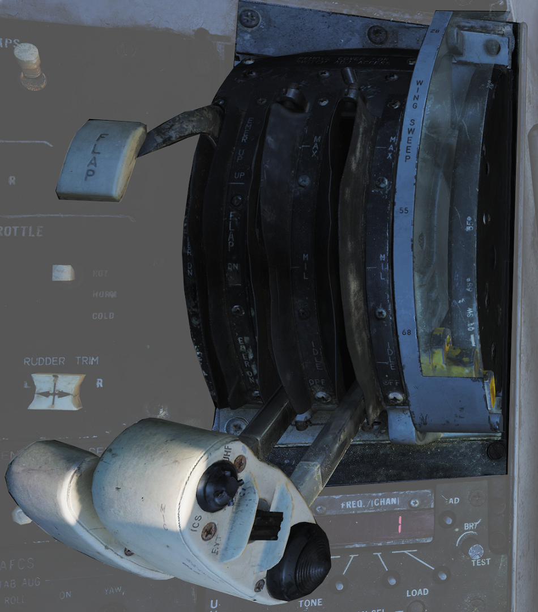
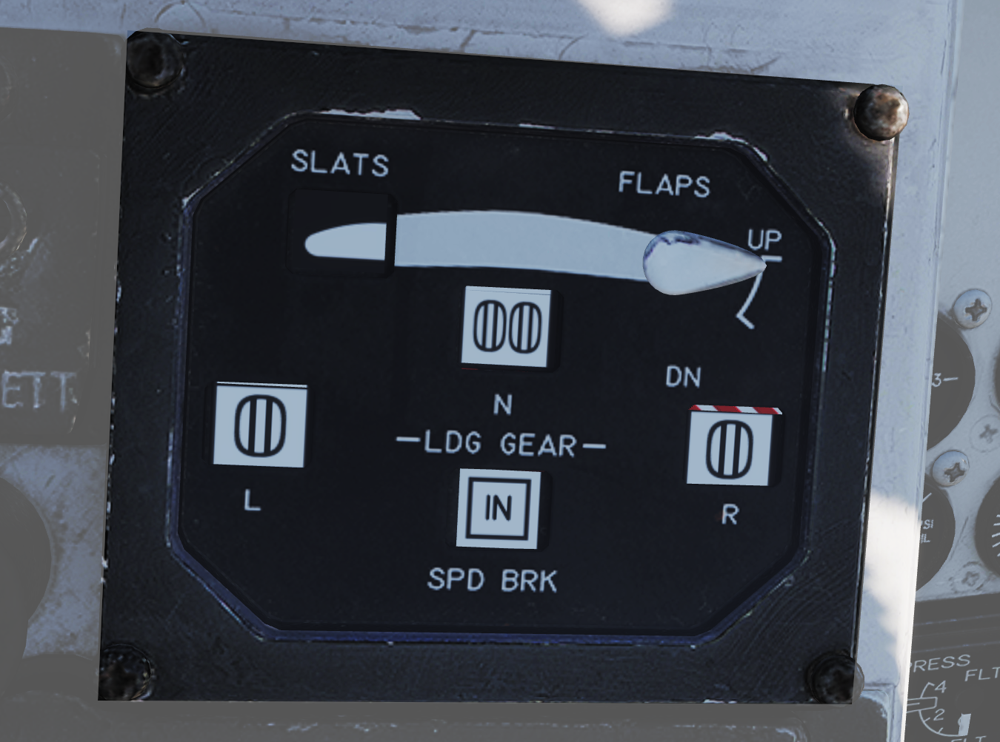
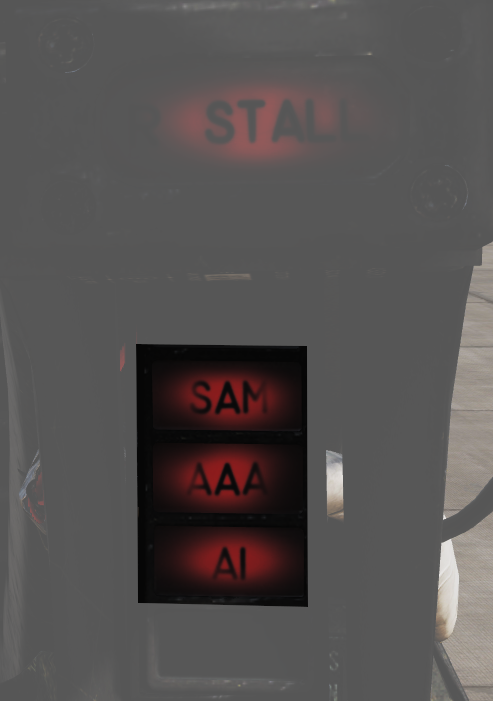
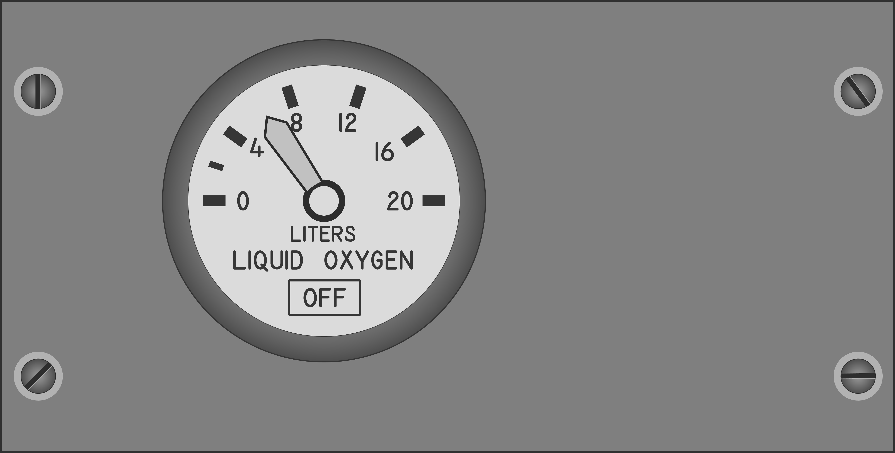
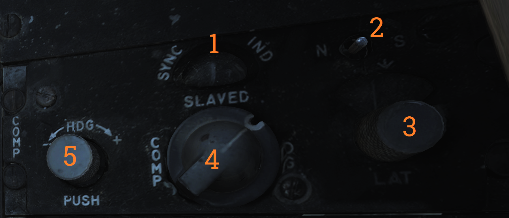
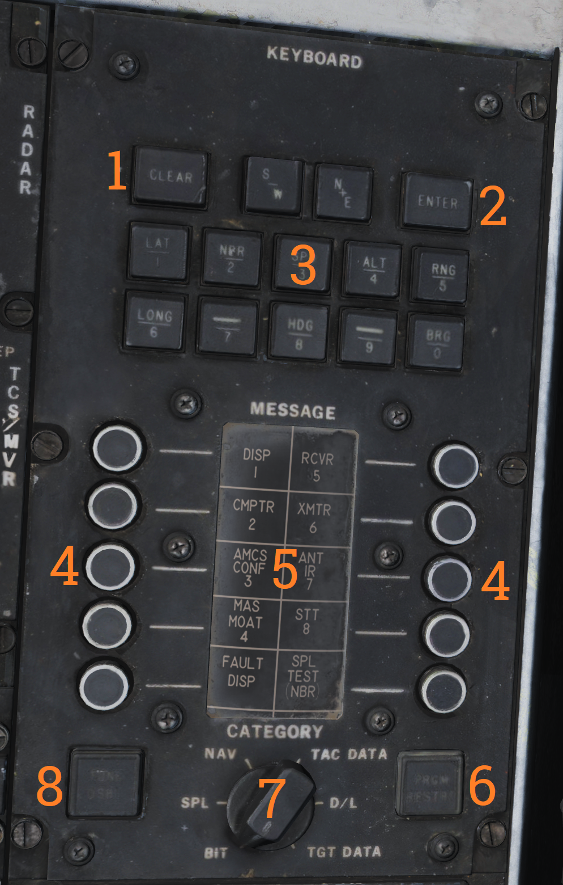
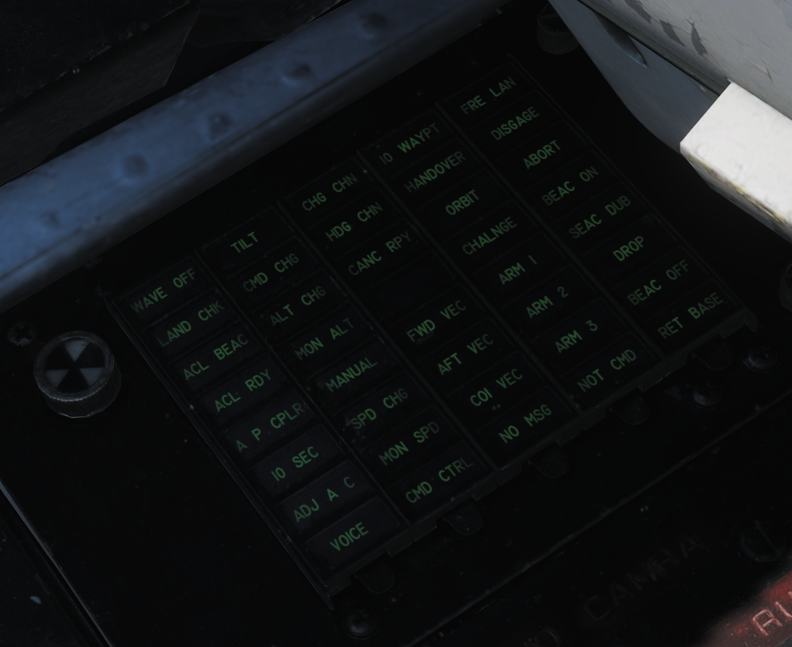
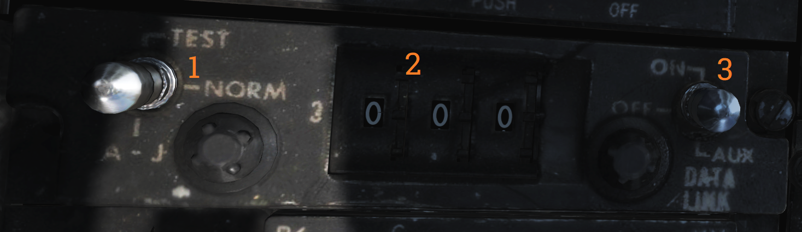
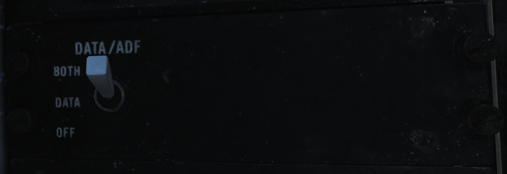
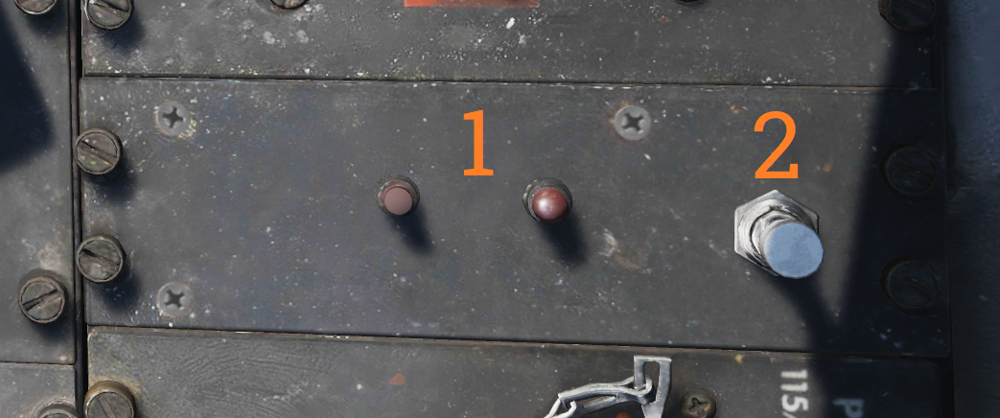

驾驶舱简介¶

F-14 飞行员驾驶舱¶
左侧控制台¶

供氧-通风控制面板¶

控制抗荷服或坐垫中的通风气流以及通向飞行员面罩的氧气。
控制 |
功能 |
|---|---|
|
通风气流调节拨轮，用于控制抗荷服气流进出，未连接抗荷服时则控制坐垫气流。 |
|
供氧开关，开关有 ON / OFF 两个档位。用于控制流向面罩的氧气。 |
音量 / TACAN 指令面板¶

用于调整飞行员头戴中的音量和指定控制 TACAN 的机组成员。
控制 / 指示器 |
功能 |
|---|---|
|
用于控制飞行员头戴中，ALR-67 的音量。 |
|
“响尾蛇”音量旋钮，用于调节飞行员头戴中“响尾蛇”导弹的音调音量。 |
|
控制飞行员头戴中 AN/ARC-182 无线电台的音频音量。 |
|
带有指示灯的按钮开关，用于指定控制 TACAN 的机组成员（飞行员 / RIO）。指示灯显示当前的设定。 |
TACAN 控制面板¶

如果飞行员有 TACAN 控制权，则可以通过该控制面板操作 TACAN。
控制 / 指示器 |
功能 |
|---|---|
|
使用外侧拨盘选择 TACAN 波道的前两位数字，使用内侧拨盘选择最后一位数字。 |
|
通过/未通过指示灯，指示 TACAN 是否通过自检。 |
|
自检按钮，按下按钮开始 TACAN 自检。 |
|
模式开关，用于切换 TACAN 的工作模式，可以选择 X 或 Y 波段。INVERSE 模式无功能。 |
|
音量控制旋钮，用于调整通过 ICS 的 TACAN 台识别信号音频音量。 |
|
用于选择 TACAN 功能模式。
OFF - 关闭 TACAN。
REC - 仅接收信号。
T/R - 传输并接收信号，该模式下可进行距离读数。
A/A - 空对空 TACAN 模式。
BCN - 信标 TACAN 模式（无功能）。
|
机内通话系统控制面板¶

机内通话系统（ICS）的控制面板。
控制 |
功能 |
|---|---|
|
音量旋钮，用于调节飞行员接收 RIO 对讲音频的音量。 |
|
用于选择将音频信号输出到飞行员头戴的放大器。
B/U - 备用放大器。
NORM - 正常放大器。
EMER - 应急放大器。这个档位会使用 RIO 的放大器和其的音量设定。启用应急放大器时，飞行员将无法监听只有正常放大器中飞行员才能听见的 “响尾蛇” 导弹音调和发动机失速 / 超温警告音。
|
|
用于选择 ICS 的功能。
RADIO OVERRIDE - 无线电台超控，使 ICS 音频超控无线电台音频。
HOT MIC - RIO 无需按下 PTT（Push-To-Talk，按键通话）开关即可进行对讲。同时允许地勤人员通过外部机内通话器与机组成员通话。
COLD MIC - RIO 需按下 PTT 开关才能对讲。
|
AFCS 控制面板¶

用于控制自动飞控系统（AFCS）和自动驾驶。
控制 |
功能 |
|---|---|
|
启用俯仰增稳。 |
|
启用横滚增稳。 |
|
启用偏航增稳。 |
|
用于切换自动驾驶远程控制模式。
VEC/PCD - 引导航向/精确航线方向模式。通过数据链路控制飞机横滚和俯仰轴。这个模式通过飞行员驾驶杆上的 NWS（前轮转向）按钮启用。
OFF - 功能关闭。
ACL - 自动助降模式，通过飞行员驾驶杆上的 NWS 按钮启用 ACL。
|
|
高度保持开关，开关有 ALT / OFF 两个档位，开关用来启用高度保持。这个功能通过飞行员驾驶杆上的 NWS 按钮启用。 |
|
航向保持开关，用于选择航向保持模式。
HDG - 启动航向保持模式。
OFF - 关闭航向保持模式。
GT - 启用地面航迹模式，通过飞行员驾驶杆上的 NWS 按钮启用。
|
|
自动驾驶启用开关，开关有 ENGAGE / OFF 两个档位，分别用于启用和关闭自动驾驶。 |
- 注意
所有开关皆为弹簧归中至 OFF 档位，由螺线管保持在选定档位上，满足解除条件时，开关会自动弹回 OFF 位置。
UHF 1（AN/ARC-159）无线电台¶

UHF 1 无线电台及其控制开关/按钮。
控制 / 指示器 |
功能 |
|---|---|
|
音量旋钮。用于调整飞行员头戴中 UHF 1 音频的音量。 |
|
静噪控制开关，有 ON / OFF 两个档位，分别用于启用或关闭静噪。 |
|
频率选择开关，拨动开关来调制频率。 |
|
频率 /（波道）显示窗，用于显示当前选中的频率或波道。 |
|
拨动并保持住开关来查看所选预设波道的频率。 |
|
亮度旋钮，用于调节显示屏的亮度。 |
|
加载按钮，按下按钮来加载显示窗中显示的频率至预设波道。 |
|
用于选择无线电功能。
该旋钮的四个档位分别是 ADF、BOTH、MAIN 和 OFF。
|
|
波道选择旋钮，用于选择预设波道。 |
|
用于记录频率或预设波道的作用。 |
|
这个旋钮用于选择无线电频率模式（GUARD - 救生频率，MANUAL - 手动频率，PRESET - 预设频率）。 |
|
音调按钮，按住按钮会在当前无线电频率上发送一个单音（频率为1,020赫兹）。 |
- 注意
AN/ARC-159 中的 ADF 无功能，改为使用 V/UHF 2中的 ADF。
不对称推力限制器 / 发动机模式选择（仅 F-14B 拥有）¶

这个面板用于控制不对称推力限制系统和发动机控制模式。
控制 |
功能 |
|---|---|
|
不对称推力限制器开关，带有保护盖，开关 ON / OFF 两个档位分别启用和禁用不对称加力推力限制器。 |
|
发动机模式选择开关，用于选择左右发动机各自的控制模式。
PRI - 主要控制模式。
SEC - 次要控制模式。
|
目标指定开关¶
用于在 HUD 中指定地面目标，也用于控制飞行员 ACM 雷达模式，但 PLM（飞行员锁定模式）模式除外。开关可以上下拨动，也可以向前拨动至目标指定档位。
空对地模式中，上/下拨动开关来移动指示符，向前拨动开关来指定目标。在其他模式中，上/下拨动开关分别选择 VSL HI（垂直扫描锁定 - 高目标）和VSL LO（垂直扫描锁定 - 低目标）ACM模式，而向前拨动开关选择 PAL 模式。
进气道斜板 / 油门控制面板¶

这个面板用于控制多个发动机系统、油门设置以及方向舵配平。
控制 |
功能 |
|---|---|
|
油门模式开关，用于选择油门工作模式。
AUTO - 自动模式。
BOOST - 助力模式。
MAN - 手动模式。
|
|
油门温控开关，用于选择油门计算机增益。
HOT - 增大标准油门计算机增益。
NORM - 使用标准油门计算机增益。
COLD - 减小标准油门计算机增益。
|
|
进气道斜板开关，用于选择左右发动机各自的进气道斜板工作模式。
STOW - 收上。
ATUO - 自动模式。
|
|
发动机起动开关，用于起动左发动机或右发动机。 |
|
备用点火开关，用于开启或关闭备用点火。 |
|
方向舵配平开关，用于调整方向舵配平。 |
油门握把¶

油门握把上包括了各种飞行控制和 HOTAS（手不离杆）功能。
控制 |
功能 |
|---|---|
|
用于控制减速板展开和收起。
EXT - 释放开关后，回到中间位置。将开关保持在 EXT 档位会逐渐展开减速板。开关回中后，减速板仍会保持在当前位置。
RET - 将开关拨至该位置来收起减速板。
|
|
这个开关用于控制机翼后掠功能。手动模式下选择的后掠位置只能比 CADC 设置的位置靠后（后掠角度不能小于 CADC 指令后掠角）。
AUTO - 机翼后掠位置由 CADC（中央大气数据计算机） 自动设置。
FWD - 手动向前调节机翼后掠位置。
AFT - 手动向后调节机翼后掠位置。
BOMB - 如果机翼后掠角度小于55°，则将机翼后掠至55°位置。如果 CADC 设置的后掠位置超过55°，则将后掠位置调整至 CADC 设定的角度。
|
|
飞行员锁定模式按钮，用于选择 AWG-9 的 ACM 飞行员锁定模式。也用于在 ACL（自动助降）过程中解除自动驾驶。 |
|
用于控制 AIM-9 导弹 CAGE（导引头解锁）/ SEAM（“响尾蛇”扩展搜索模式） 并启用 AIM-9 导引头锁定。如果启用了 APC（进近推力补偿器），则用于解除 APC。 |
|
用于控制机外照明。OFF 档位会关闭所有机外照明，并增加进近指示灯亮起度。ON 档位会开启所有机外照明，并减小进近指示灯亮起度。 |
|
通过这个开关，飞行员可以选择在单波道或双波道 V/UHF 下通话，或与 RIO 对讲。
ICS - 与 RIO 通话。
BOTH - 同时在 UHF 1 和 V/UHF 2 频率下通话。
UHF1 - 在 UHF 1 频率下通话。
UHF2 - 在 V/UHF 2 频率下通话。
|
油门弧座¶
|  |
油门弧座主要组成部分包括：两个发动机油门控制握把、襟翼控制杆和应急机翼后掠手柄，另外也包括油门握把上用于控制 HOTAS 系统的按钮和开关。油门行程中的 OFF（关闭）、IDLE（慢车）和 MIL（军用推力）位置都有限动卡。
将油门从 OFF 位置推到 IDLE 位置会激活点火器并关闭发动机断油装置。油门握把内并未安装弹簧机构，横向推动油门时，握把不会被弹回原位，因此飞行员在弹射起飞时，可以将油门握把置于 MIL（军用推力）档，而不用担心油门位置意外变动，从而导致发动机转速降低。油门弧座左侧，襟翼控制杆的下方装有一个油门阻尼调节杆，用于选择所需的油门移动阻尼。
襟翼控制杆的无级行程的最前段和最后段分别有两个应急档位，一个是应急收上，一个是应急放下。两个应急档位都有限动卡，襟翼控制杆移动至限动卡位置时，需向外推动才能继续移动至应急档位。应急收上档位会强行收起襟翼，超控正常襟翼控制逻辑。应急放下档位无功能。
手动/应急机翼后掠手柄上方有一个保护盖，且手柄通常处于推入并收起的状态。握住手柄顶部，抽出手柄来进行手动机翼后掠控制。请查阅应急模式来获得更多相关信息。
手动液压泵¶
手动液压泵位于油门弧座的内侧，靠近飞行员左腿的位置。液压系统故障时，飞行员通过手动向机轮刹车蓄压器充压来进行制动操作（当起落架手柄处于放下档位时）或伸出受油管。
左侧垂直控制台¶
燃油管理面板¶

这个面板用于控制诸多燃油相关系统、CADC 复位和防滑系统。
控制 / 指示器 |
功能 |
|---|---|
|
燃油量选择开关，这个滑动弹簧开关用于选择燃油量带状指示器上显示哪个油箱中的燃油量。松开开关后，开关会弹回 FEED 档位。
FEED - 供油油箱，显示供油油箱和机身油箱中的燃油量。
WING - 机翼油箱，显示各个机翼油箱中的燃油量。
EXT - 副油箱，显示副油箱中的燃油量。
|
|
供油油箱选择开关，用于选择为发动机供油的油箱。保护盖关闭时，开关被锁定在 NORM 档位。 |
|
机翼/副油箱转移开关，用于控制机翼油箱和副油箱中的燃油转移。
ORIDE - 超控。
AUTO - 一般使用的档位。
OFF - 停止机翼和副油箱的燃油传输。
|
|
当受油管未完全伸出，或未完全收起时，指示灯便会亮起。 |
|
放油开关，用于开启或停止放油。减速板收起，机轮不负重且加力燃烧关闭时飞机可以进行放油操作。 |
|
受油管开关，用于伸出或收起受油管。
ALL EXTD - 受油管移动至完全伸出位置，允许对所有（ALL）油箱受油。同时也会将机翼/副油箱转移开关（WING/EXT TRANS）复位回 AUTO 档位。
FUS EXTD - 受油管移动至完全伸出位置，只允许对机身（FUS）油箱受油。
RET - 收起受油管。
|
|
防滑和扰流板制动开关，用于选择和控制防滑系统和扰流板制动系统。
BOTH - 机轮负重时，启用防滑系统和扰流板制动系统。
OFF - 关闭防滑系统和扰流板制动系统。
SPOILER BK - 扰流板制动，机轮负重时，启用扰流板制动功能。
|
|
CADC 主复位按钮，用于复位 CADC 故障检测系统及相关故障显示。 |
|
显示操纵面位置。详见下文。 |
操纵面位置指示器¶

操纵面位置指示器是用于指示各个飞行操纵面位置的仪表。
指示器 |
功能 |
|---|---|
|
扰流板位置指示器。
DN - 扰流板收起，与机翼齐平。
向上箭头 - 扰流板伸出。
向下箭头 - 扰流板放下至机翼表面下方。
|
|
方向舵位置指示器，标注的“L”和“R”分别指示了左方向舵和右方向舵的位置。 |
|
水平安定面位置指示器，标注的“L”和“R”分别显示了左水平安定面和右水平安定面的位置。 |
弹射杆中止面板¶

弹射杆选择开关，将弹簧开关保持在 ABORT 档位时，弹射杆升起，终止弹射。松开开关后，开关弹回 NORM （正常）档位，这也是弹射杆选择开关的标准位置。目前，这个开关在 DCS 中没有实际作用。
起落架控制面板¶

这个面板用于控制主起落架和应急挂载抛弃。
控制 / 指示器 |
功能 |
|---|---|
|
起落架控制手柄，用于选择起落架的 UP（收上）或 DOWN（放下）位置。
紧急情况下（液压失效等），将手柄置于向下位置，并将手柄推入，顺时针旋转手柄顶端然后抽出。这会释放储存的压缩氮气，使起落架紧急放下。
|
|
起落架放下锁定超控杆，被电磁铁移动至向下位置时指示机轮负重。可以升起至向上位置来超控（起落架手柄锁定在 DOWN 位置）。DCS 中无功能。 |
|
起落架液压隔离开关，用于将起落架、前轮转向和机轮刹车的液压控制隔离出联合液压系统。起落架手柄处于放下位置时，隔离开关由起落架手柄自动移动至 T.O. / LDG 档位。
FLT - 空中飞行时，隔离上述系统中的液压控制。
T.O. / LDG - 起飞/降落，接通上述系统的液压控制，允许它们正常工作。
|
|
起落架实际位置与起落架控制手柄位置不符时，指示灯会亮起。 |
|
详见下文。 |
|
应急挂载抛弃按钮，按下时会亮起，表示激活应急抛弃。 |
|
前轮支柱开关，这个弹簧开关用于控制前起落架支柱伸缩。
EXTD - 伸展前起落架支柱，升起并锁定弹射杆。
OFF - 关闭前起落架支柱运动，松开开关时，开关弹回该位置。
KNEEL - 减小前起落架支柱系统中的液压压强，使支柱收缩，从而降低机头的高度，同时解锁弹射杆。
|
|
制动-抽出手柄，用于控制停放刹车，抽出手柄来启动停放刹车，推入手柄释放机轮刹车。 |
|
弹射指令指示器，指示后座驾驶舱的弹射系统的模式。
PILOT - 飞行员弹射时弹射所有机组乘员，RIO 弹射时只弹射自己。
MCO - 飞行员或 RIO 弹射时，另一名机组乘员也会被弹射。
|
机轮-襟翼位置指示器¶



左膝仪表板¶
液压指示器¶
显示联合液压系统和飞行液压系统的油液压力。SPOIL（扰流板）ON/OFF 警示旗指示外侧扰流板模块加压。选中 EMER FLT（应急飞行液压）HI 或 LOW 时，EMER FLT 标识下方的 HI 和 LOW 对应的 ON/OFF 警示旗分别指示备用飞行液压系统是否启用。


电子仪表组¶

显示每个发动机的 RPM（高压压缩机转子转速，也就是N2）、EGT（发动机排气温度）和 FF（燃油流量）。
- 注意
图中展示的是 TF-30 发动机的仪表组，F110 发动机的 EIG 即将实装。
- 注意
加力推力时 FF 不显示加力消耗的额外燃油。
左仪表板¶
雷达高度计¶

飞机雷达高度的控制和指示器。
控制 / 指示器 |
功能 |
|---|---|
|
逆时针旋转旋钮至最大位置会关闭雷达高度计。顺时针旋转旋钮来设置警报高度，警报高度随着旋钮顺时针旋转而增加。
按下旋钮开始高度表自检。
|
|
系统关闭、电源关闭或丢失地面锁定时，雷达高度计会显示 OFF 警示旗。 |
|
当飞机低于雷达高度计上设置的警报高度时，红灯会亮起。 |
|
进行高度表自检时，绿灯会亮起。高度表读数应显示100 ± 10 英尺。 |
低高度限制指示 |
沿着表盘外沿移动的小三角形游标，它显示了设定的警告高度。 |
- 注意
无线电台超控并不会禁用低高度警告的音频。
气动伺服高度表¶

气动伺服高度表的控制和指示器。
控制 / 指示器 |
功能 |
|---|---|
|
在机械计数器的三个数位上分别显示万英尺、千英尺和百英尺读数。同时，表盘指针指向的圆形刻度表示百英尺。 |
|
设置以英寸汞柱（in.Hg）为单位的本地气压。只用于气压计本身的读数，所有其他（由 CADC 控制的）数字指示器都使用 29.92 英寸汞柱作为气压数值。 |
|
指示调定的本地气压值，这个显示框也被称为“Kollsman Window”。 |
|
三档位弹簧开关，松开开关时，开关从 RESET 位置弹回正常位置。如果接通电源，且 CADC 可提供高度数据，那么将开关在 RESET 档位保持3秒后，高度计会进入正常（伺服）工作模式。如果将开关拨至 STBY 位置，或电源断开，或缺少 CADC 高度数据，那么3秒后，系统会切换至备用（气压）模式。 |
STBY 标识旗 |
如果系统处于备用工作模式，表盘中会显示红色的标有 STBY 字样的标识旗。 |
- 注意
10,000 英尺下高速飞行时，由于气压变化较大，飞机跨声速飞行时，气压计读数误差最多 1,200 英尺，而超声速飞行时，误差可能高达 4,000 英尺 。
空速马赫表¶

用于指示空速和马赫数。
控制 / 指示器 |
功能 |
|---|---|
|
用三种刻度显示指示空速，其中两种刻度对应指示空速，另一种刻度则是随着指针拨盘镂空处转动而显示的马赫数。 |
|
指示空速的读数，最高200节。 |
|
指示空速的读数，刻度对应从200节到850节空速。内圈的指示空速刻度被空速表拨盘未镂空的部分盖住，直到需要显示对应的空速时。 |
|
马赫数的读数。显示正确的以马赫数为单位的指示空速。 |
|
可以将游标调定到所需的指示空速上。 |
|
可以将游标调定到所需的马赫数上。在上图中不可见。 |
|
显示 CADC 计算的最大安全马赫数。 |
|
这个旋钮有抽出和按下两个档位，分别用于设置指示空速游标和马赫数游标。 |


迎角指示器¶

条形迎角指示器指示了飞机的迎角（AoA），范围是 0 至 30 迎角单位（对应迎角探头在 -10° 至 +40° 范围内转动）。
指示器右侧的标识分别指示各个飞行阶段对应的最佳迎角单位：爬升（5）、巡航（8.5）和失速（29），而 15 单位处的参考横线表示最佳进近迎角单位（15）。
风挡左边框¶
进近迎角分度器¶

进近指示灯由三盏灯组成，它显示了当前迎角和最佳进近迎角的相对关系。
绿色灯表示空速过低，琥珀色灯表示正处于最佳进近迎角，而红色表示空速过高。
如果拦阻钩旁路开关处于 CARRIER（着舰）位置，起落架放下，但拦阻钩升起时，进近迎角指示灯会闪烁。
这些灯光会在前起落架支柱的进近灯上重复显示，以便在着舰时，让 LSO（着舰信号官）也能通过观察灯光来判断飞机的 AOA。
机轮警告/刹车警告/ ACLS 和 AP 注意/ NWS 启用注意/自动油门注意灯¶

位于 HUD 左侧的指示灯。
指示器 |
功能 |
|---|---|
WHEELS |
机轮告警灯。起落架未放下或未锁定，且襟翼放下的角度小于10°，或油门行程小于总行程的85%时，报警指示灯亮起起。 |
BRAKES |
机轮刹车告警灯。报警指示灯亮起起时，表示防滑系统或刹车故障。设置机轮刹车也会使报警指示灯亮起起。 |
ACLS/AP |
自动助降系统/自动驾驶注意灯。注意指示灯亮起起指示 ACLS 或自动驾驶已断开。 |
NWS ENGA |
前起落架转向激活注意灯。注意指示灯亮起起表示前轮转向已启用。 |
AUTO THROT |
自动油门注意灯。通过油门控制面板上的油门模式开关可以断开自动油门控制，任何其他原因导致的自动油门断开都会使注意指示灯亮起起。 |
中央仪表板¶
平视显示器（HUD）¶
平视显示器用于在驾驶舱前部/风挡玻璃上投影飞行和武器投放数据。使用位于 VDI 右侧的 FILTER 手柄可以选择 HUD 夜间模式。
HUD 的左侧和右侧分别装有失速告警灯（L STALL 和 R STALL 告警灯）。它们分别指示对应一侧发动机的压气机失速。
- 注意
请查阅 导航 和 武器系统和武器使用总览 来获得更多相关信息。
空战格斗面板¶

飞行员主要的武器控制面板。
控制 / 指示器 |
功能 |
|---|---|
|
升起 ACM（空战格斗）保护盖会激活 ACM 模式并允许使用 ACM 抛弃按钮。 |
|
ACM 保护盖开关下的抛弃按钮用于抛弃 RIO 武器控制面板上选择的挂载。按下抛弃按钮并不会抛弃“响尾蛇”导弹，即使 RIO 选择了“响尾蛇”。 |
|
当“响尾蛇”导弹处于隶属模式或视轴 SEAM 模式下，且导引头正进行搜索时，SEAM LOCK 灯会亮起。SEAM LOCK 灯会在 SEAM 尝试进行锁定的4.5秒期间内亮起，如果导引头成功锁定目标则继续保持亮起。 |
|
灯光亮起表示 AWG-9 STT（单目标跟踪）操作时选择了恒量角度拦截转向模式。 |
|
红指示灯亮起起表示满足武器发射逻辑的条件（HOT TRIGGER）。指示灯亮起时，按下扳机会发射武器。 |
|
航炮射速选择开关，用于切换航炮射速模式，开关中的指示灯显示了当前选择的模式。
HIGH - 高射速，选择6,000发每分钟的航炮射速。通常用于空对空攻击。
LOW - 低射速，选择4,000发每分钟的航炮射速。通常用于空对地攻击。
进入 ACM 模式后系统会自动选择 HIGH 模式。
|
|
“响尾蛇”冷却开关，这是一个带有指示灯的按钮开关。按下开关来手动开启或关闭“响尾蛇”导弹冷却。ACM 下将自动切换至 ON（开启）。 |
|
导弹发射准备开关，这是一个带有指示灯的按钮开关。按下开关来命令 WCS（武器控制系统）开始 AIM-54 和 AIM-7 导弹的发射准备过程。ACM 模式下系统将自动切换至 ON。 |
|
导弹模式选择开关，这是一个带有指示灯的按钮开关。用于选择导弹发射模式： NORM（正常）模式或 BRSIT（视轴）模式。在 ACM 模式下，导弹发射模式由 WCS 控制。 |
|
主军械开关，开启主军械开关将允许武器发射和挂载选择抛弃。
OFF - 切断武器发射电路的电源。
ON - 接通武器发射电路的电源。主军械保护盖升起后才可选择该档位。
TNG（训练）- 启用飞行训练模式。
|
|
显示每个挂点的武器状态。
黑色 - 挂点未挂载武器，或武器未就绪。
白色 - 挂点和武器准备就绪。
黑白相间的棋盘图案 - 该挂点上的武器被选中，且准备发射。在地面时，该图案表示机身导轨挂点升起并锁定，且挂载的武器已激活。
|
|
主注意灯，灯光闪烁表示飞行员注意/提示灯面板上灯光状态发生变化。按下来复位主注意灯并熄灭灯光，直到下一个注意事件被触发。 |
|
发动机火警告警灯。发动机失火时，对应故障发动机一侧的报警指示灯亮起起。 |
|
显示飞机围绕垂直轴的转弯率。
转弯侧滑仪上半部分是一个电动指针，一个指针距离的偏转等同于4分钟内进行转向一周。
转弯侧滑仪下半部分是一个测斜仪，内有一个用于指示侧滑的悬浮在阻尼液中的小球。
|
垂直显示指示器（VDI）¶

为 HUD 补充显示飞行和武器数据。
- 注意
点击 VDI 屏幕中央可以加装一个夜间滤镜片。
- 注意
请查阅 导航 和 武器系统和武器使用总览 来获得更多相关信息。
控制 / 指示器 |
功能 |
|---|---|
|
用于控制 HUD 的亮度。 |
|
用于控制 VDI 的亮度。 |
|
用于控制 VDI 的对比度。 |
|
抽出手柄以选择 HUD 夜间模式。 |
|
HUD 调节旋钮，使用这个旋钮来调整 HUD 上的俯仰梯度。 |
|
VDI 调节旋钮，使用这个旋钮来调整 VDI 上的俯仰梯度。 |
|
VDI 两侧安装的注意灯。详见下文图片和表格。 |

安装在 VDI 面板上的数据链路警告和注意灯。
指示器 |
功能 |
|---|---|
ADJ A/C |
提示灯，指示有其他飞机接近本机当前的起降航线。 |
LANDING CHK |
提示灯，指示母舰 ACL 通道准备就绪，且机组成员应做好着舰准备。 |
ACL READY |
告警灯，指示 CATCC（母舰空中交通管制中心）已经获取本机信息，且正在向本机传输下滑道信息。 |
A/P CPLR |
告警灯，指示 CATCC 已准备控制飞机。 |
CMD CONTROL |
告警灯，指示飞机正由数据链路控制进行助降。 |
10 SECONDS |
告警灯，指示 ACL 着舰过程中，数据链路的下滑道信息和指令正根据母舰的持续运动进行调整。在其他模式下则表示距离进近航线钟的下一个检查点还有10秒钟。 |
TILT |
告警灯，指示 ACL 过程中，未能接收数据链路控制的时间超2秒。非 ACL 模式下，报警指示灯亮起起表示过去的10秒内未接收任何数据链路信息。 |
VOICE |
告警灯，指示 CATCC 自动助降未就绪，切换至标准的基于音频通讯的进近流程。 |
A/P REF |
告警灯，指示已选择自动驾驶，但自动驾驶未启用（高度和航向保持除外）。 |
WAVEOFF |
告警灯，指示执行复飞指令。 |
WING SWEEP |
指示指示灯亮起起表示两侧的机翼后掠控制通道中出现故障，或表示应急机翼后掠手柄的随动限位器解除。 |
REDUCE SPEED |
告警灯，亮起表示指示空速超过225节以及襟翼故障无法收上。也用于指示飞机空速超过最大安全马赫数。 |
ALT LOW |
无功能，改用无线电高度计上的灯光。 |
水平状态显示器（HSD）¶

水平状态显示器用于向飞行员显示导航信息。它也用于重复 RIO 的 TID 屏幕中显示的内容。
控制 |
功能 |
|---|---|
|
亮度旋钮，用于控制 HSD 的亮度。 |
|
航向选择旋钮，用于 TACAN 模式下设定参考航向游标。 |
|
航线旋钮，用于在 TACAN 和 MAN（手动）模式下设定所需航线。 |
|
测试按钮，如果触发了过载保护，HSD 显示消失，则可以通过这个按钮来复位 HSD 显示。同时也用于在 HSD 上显示 HSD IR 现场测试。 |
|
显示白色标识旗时，表示 HSD 故障。逆时针旋转旋钮来复位 HSD。 |
- 注意
请查阅 导航 和 战术信息显示器（TID）与相关控制器 中的相关章节来获取更多相关信息。

应急刹车压力表¶
显示应急刹车蓄压器中的可用于备用刹车和停放刹车系统的油液压力。
PARK - 显示停放刹车可用的刹车压强。绿色区域对应的范围是2,150至3,000 psi（磅力每平方英寸），红色区域对应的范围是1,900至2,150 psi。指针指向绿色时，蓄压器中的液压压强可供刹车进行约三次制动操作。
AUX - 显示备用刹车系统中的刹车压强，飞行员可以通过脚踏上的指尖刹车来启用备用刹车。绿色区域对应的范围是2,150至3,000 psi（约可提供13至14次刹车制动），而红色区域对应的范围则是1,900至2,150 psi（约可提供5次刹车制动）。
驾驶杆¶
用于控制飞机横滚和俯仰。同时也用于控制下表所述的各种功能：
控制 |
功能 |
|---|---|
|
挂载投放按钮，用于投放空对地挂载（航空火箭弹例外）或发射挂架挂载的额外对抗措施。 |
|
这个苦力帽开关用于控制配平，上下位置配平俯仰，左右位置配平横滚。 |
|
选择开关可上下移动，也可按下。
SP / PH - 选择 AIM-7 或 AIM-54，按下开关来切换选中的导弹类型。
SW - 选择 AIM-9，按下开关来切换选中的 AIM-9 挂点。
GUN - 选择M-61A1“火神”航炮。
OFF - 禁止武器发射。
|
|
拨轮用于控制 DLC（直接升力控制）或机动襟翼。
启用 DLC 时，向前转动拨轮伸出扰流板，向后转动拨轮收起扰流板。
起落架和襟翼收上且 DLC 解除时，向前转动拨轮收起机动襟翼/缝翼，向后转动拨轮放下襟翼。
这个功能背后的逻辑是，向后拨动拨轮来增加升力，向前拨动拨轮来减小升力。
|
|
襟翼放下，油门不超过 MIL（军用推力）位置，且扰流板系统无故障时，短按按钮来启用 DLC。
襟翼收上时，按下按钮会命令 ALE-39 根据 RIO 的设置弹射箔条和红外干扰弹。
再次按下按钮，或收起襟翼，或将油门推至超过 MIL 位置，DLC 便会解除。
|
|
机轮负重时，按下按钮来启用或关闭前轮转向系统。
机轮不负重时，按下按钮来启用当前选定的自动驾驶模式。
|
|
断开所有自动驾驶模式和 DLC，同时将所有自动驾驶模式开关弹回中置位置，并将横滚和俯仰 SAS（增稳系统）开关退回 OFF 位置。
机轮负重时，按下紧急断开开关也会将油门模式退回 MAN（手动）模式。
|
|
两段式扳机。第一段激活 CTVS（驾驶舱电视传感器）和照相枪。第二段发射选中的前射武器。 |
- 注意
DCS 中未实现 CTVS 的功能。
风挡右边框¶
ECM（电子对抗）告警灯光¶
这些告警灯与 ALR-67 相连，用于指示不同类型的雷达威胁。
SAM - 地空导弹，灯光稳定亮起表示侦测到地空导弹跟踪雷达锁定，灯光闪烁表示侦测到地空导弹发射。
AAA - 高射炮，灯光稳定亮起表示侦测到防空炮跟踪雷达锁定，灯光闪烁表示侦测到防空炮开火。
AI - 机载截击雷达，灯光稳定亮起表示侦测到机载雷达锁定。

右仪表板¶
机翼后掠指示器¶

用于显示后掠翼系统的详细状态。
最左侧的指针指示了机翼后掠控制程序选定的后掠位置，也就是当前的空速和高度下的最小后掠角度。
中间的条形指示器显示了指令后掠位置。
最右侧指示带显示了实际的机翼后掠位置。
右侧五个垂直排列的显示窗口显示了当前的机翼后掠工作模式。

备用姿态仪¶

独立工作的备用姿态仪。
表盘左侧显示的 OFF 标识旗表示备用姿态仪锁定或未通电。
表盘右下方的旋钮用于锁定/解锁姿态仪和调节俯仰梯度显示。旋钮抽出时，姿态仪锁定。旋钮按下时，旋转旋钮可以调节俯仰梯度指示线。
UHF/VHF 远程显示器¶

这个远程显示器用于显示 UHF 1（AN/ARC-159）和 V/UHF 2（AN/ARC-182）中调定的频率或波道。
控制 / 指示器 |
功能 |
|---|---|
|
显示 UHF 1 无线电台调定的频率或波道。
TEST - 开始显示器自检，如果通过测试，屏幕中会显示 888.888。
DIM - 用于控制显示器亮度。
|
|
显示 V/UHF 2 无线电台调定的频率或波道。
TEST - 开始显示器自检，如果通过测试，屏幕中会显示 888.888。
BRT - 用于控制显示器亮度。
|
方位距离航向指示器（BDHI）¶
用于显示方位和航向信息。
指示器 |
功能 |
|---|---|
|
指向调定的 TACAN 台的磁航向。 |
|
显示当前飞机的磁航向。 |
|
指向调定的 UHF/ADF 电台的方位。 |
|
显示本机至调定的 TACAN 台的斜距（图中不可见）。 |
ALR-67 显示器¶

用于显示 ALR-67 RWR（雷达告警接收机）组件侦测到的辐射源。
控制 / 指示器 |
功能 |
|---|---|
系统状态圈，区域 I |
区域 I 的左上象限中显示的符号代表威胁目标的显示类型。
N - 正常优先级
I - AI，优先显示机载截击雷达威胁。
A - AAA，优先显示防空高炮威胁。
U - 优先显示不明辐射源。
F - 显示其他雷达威胁的同时也显示友方信号源。
|
系统状态环，区域 II |
区域 I 的右上象限中的标志显示 ARL-67 是否处于限制模式。
无显示 - 未选择限制模式。
L - 选用限制模式，只显示威胁最高的6个雷达威胁。
|
系统状态圈，区域 III |
区域 I 的下半部分用于显示故障编码，或指示是否启用了威胁目标符号偏置。
无显示 - 无故障且未选择符号偏置。
B - BIT（自检）未通过。
T - 过热。
O - 选择了偏置显示模式。重叠的威胁目标符号会偏置显示，以增强可读性。选择偏置显示模式时，显示器指示目标方位信息的精度会下降。
|
|
用于显示 RWR 认为处于射程外，或未装备武器，从而不直接对本机构成威胁的辐射源。 |
|
用于显示 RWR 认为处于射程内，且装备武器，但并未攻击本机的辐射源。 |
|
显示对本机构成直接威胁的辐射源。辐射源有能力攻击本机，且攻击意图明显。 |
|
用于控制显示器的亮度。 |

右膝仪表板¶
燃油量指示器¶

用于显示飞机不同油箱中的燃油量。
控制 / 指示器 |
功能 |
|---|---|
|
显示当前调定的 BINGO 油量（返航油量）。 |
|
燃油总量读数对应了飞机所有油箱中的燃油总量。 |
|
分别用于显示左侧或右侧选定油箱的燃油量。使用燃油管理面板中的 QTY SEL 开关可以选择计数器显示哪一个油箱（供油油箱组、机翼油箱或副油箱）中的燃油量。 |
|
显示对应油箱中的燃油量。左指示带指示左供油油箱组和后机身油箱中的燃油量。右指示带指示右供油油箱组和前机身油箱中的燃油量。 |
|
用于选择返航油量（BINGO），旋转旋钮来调定所需油量。 |
加速度表¶

显示当前飞机过载值（沿飞机垂直轴的加速度）的仪表。它的显示范围是 -5G 至 +10G。 其中一个指针将显示当前 G 值，而另外两个指针指示飞行过程中受到的最大正 G 和负 G 过载值。 按下仪器左下角的复位按钮可以复位指针位置。
右垂直控制台¶
拦阻钩控制面板¶

用于控制拦阻钩。
控制 / 指示器 |
功能 |
|---|---|
|
拦阻钩控制手柄，用于选择拦阻钩的位置。
UP - 电动向液压系统增压，升起拦阻钩并上锁。
DN - 电动向液压系统减压，使拦阻钩受缓冲器压力和自身重力放下。
EMERG DOWN - 应急放钩，抽出并逆时针旋转手柄会释放拦阻钩锁定机构，使拦阻钩放下。
|
|
灯光亮起表示拦阻钩实际位置与拦阻钩手柄对应位置不符。高速飞行中放下拦阻钩时，由于空气向后吹动拦阻钩，使其无法放下，因此指示灯直到拦阻钩完全放下才会熄灭。 |
|
显示 M-61A1 航炮的剩余弹药数量。从 676 开始倒数，但可按需使用右侧的旋钮调整至所需数值。 |
显示控制面板¶

- 注意
图像资料显示，装有整合 RWR 的 F-14 的 HSD 模式和还有第三种选项——ECM ORDIE（ECM 超控），但不适用于装备了 AN/ALR-67 的飞机上。
用于控制前座驾驶舱中的显示器。
控制 / 指示器 |
功能 |
|---|---|
|
转向指令选择开关，用于选择当前的转向指令来源，且所有选择开关互斥（只能选中一个），当前被选中的开关会旋转。
TACAN - 使用 TACAN 作为转向指令源。
DEST - 选择 RIO 设置的航路点作为转向指令源。
AWL/PCD - 全天候助降/精确航线方向。按下开关选择使用下滑道引导（ILS/ACLS）进行着舰，或选择 PCD 作为空对地攻击方向用于转向指令源。
VEC - 引导航向，选择数据链路偏差转向作为转向指令源。
MAN - 手动，使用手动选择的航线和航向作为转向指令源。
|
|
用于选择显示模式，且所有选择开关互斥（只能选中一个），当前被选中的开关会旋转。
T.O. - 选择起飞模式。
CRUISE - 选择巡航模式。
A/A - 选择空对空模式。
A/G - 选择空对地模式。
LDG - 选择降落模式。
|
|
HUD 防拥开关，选择 HUD 标识防拥模式。 |
|
选择在 HUD 上显示何种 AWL（全天候降落）信息。
ILS - 选择 ILS 作为 AWL 信息来源。
ACL - 选择 ACL 作为 AWL 信息来源。
|
|
VDI 模式选择开关，用于选择 VDI 显示何种数据。
TV - 在 VDI 上显示 TCS 或 LANTIRN 吊舱的视频。
NORM - 使用正常 VDI 显示。
|
|
选择 VDI 上显示何种 AWL 信息。
ILS - 选择 ILS 作为 AWL 信息来源。
ACL - 选择 ACL 作为 AWL 信息来源。
|
|
HSD 模式选择开关，选择 HSD 上显示何种数据。
NAV - 导航显示，HSD 将根据选定的转向指令源显示转向信息。
TID - 重复显示 RIO 的 TID 中的图像。如果 RIO 将 TID 设置显示 TV 图像，则 HSD 无显示。
ECM - 显示 AN/ALR-45 和 AN/ALR-50 的电子对抗信息。（仅限装备了 AN/ALR-45 的 F-14A）
|
|
电源控制开关，用于控制 VDI、HUD 和 HSD / ECMD 的电源。 |
|
俯仰梯度亮度旋钮，用于控制 HUD 中俯仰梯度线的亮度。 |
|
这个开关用来设置在探测到威胁时，是否允许 ECM 超控 HSD 当前的显示。 ORIDE 允许超控， OFF 档位将禁用超控。仅在装备了 AN/ALR-45 的 F-14A 中有效。 |
准星偏移量设置面板¶
用于设置航炮 A/A 和 A/G 模式下准星的抬高/下压量。最小和最大值分别是 -263 和 +87 毫弧度。
右侧控制台¶
扰流板故障超控¶

用于超控部分故障的扰流板，使其余扰流板在进行 MASTER RESET（大气数据计算机复位）后继续正常工作。
控制 |
功能 |
|---|---|
|
内侧扰流板超控开关。
ORIDE - 超控内侧扰流板对称保护，如果一侧扰流板故障，CADC 复位后，允许另一侧正常工作的内侧扰流板继续作动。
NORM - 正常模式（保护开关锁定），该模式下，如果一侧的内扰流板故障无法升起，其余扰流板会降下，且注意灯面板中的 SPOILERS 指示灯亮起起。
|
|
外侧扰流板超控开关。
ORIDE - 超控外侧扰流板对称保护，如果一侧扰流板故障，CADC 复位后，允许另一侧正常工作的外侧扰流板继续作动。
NORM - 正常模式（保护开关锁定），该模式下，如果一侧的外扰流板故障无法升起，其余扰流板会降下，且注意灯面板中的 SPOILERS 指示灯亮起起。
|
液氧储量表¶
显示了剩余的液氧储备量。每个刻度代表 1 公升。电源故障时，表盘上显示 OFF 标识旗。通过主测试面板的 INST 模式来测试这个仪表，测试时，仪表读数应为 2 公升。
罗盘控制面板¶
用于在使用 AHRS（姿态航向基准系统）时选择罗盘工作模式。
控制 / 指示器 |
功能 |
|---|---|
|
这个指示器用于显示 AHRS 航向陀螺与磁方位探测器之间是否同步。用于 SLAVED（隶属）模式。 |
|
用于选择 DG（航向陀螺仪）和 SLAVED 模式下飞机所处的半球。这个开关对修正地球自转导致的陀螺仪偏移至关重要。 |
|
纬度选择旋钮，用于选择从0°到90°的维度，以使 DG 和 SLAVED 模式中的陀螺仪能修正地球自转导致的偏移。 |
|
用于选择 AHRS 航向信息来源。
COMP - 罗盘，直接使用磁方位探测器，不通过航向陀螺稳定，仅用于紧急情况，且罗盘显示的读数自动使用手动输入的磁差。
SLAVED - 正常模式，使用由航向陀螺稳定的磁方位探测器。
DG - 航向陀螺仪模式。
|
|
航向选择旋钮，用于 DG 和 SLAVED 模式。
在 SLAVED 模式下，它用于同步航向陀螺仪和磁方位探测器，以及设置 BDHI 上的磁航向。按下旋钮，直到同步完成，指示器指针位于零位标记上方。
在 DG 模式下，按下并旋转旋钮来调定 BDHI 中的所需航向。
按下超过3分钟时，这个旋钮也可以用于快速调平 AHRS 的俯仰和横滚。等待1分钟后，可重新进行调平。
|
ARA-63 控制面板¶

用于控制 AN/ARA-63 ILS（ICLS）系统。
控制 / 指示器 |
功能 |
|---|---|
|
波道选择开关，用于从 20 个可用的波道中选择 ICLS 波道。 |
|
用于测试 AN/ARA-63。如果 VDI 设置就绪，HUD 中会显示助降标识符。 |
|
电源开关，ON/OFF 档位分别用于接通或断开 ARA-63 的电源。提起开关才可将其拨至 OFF 档位。 |
|
灯光亮起表示 AN/ARA-63 通电。 |
注意 - 提示灯面板¶

飞行员驾驶舱的主要注意灯光面板。
指示器 |
功能 |
|---|---|
PITCH STAB 1 和 PITCH STAB 2 |
“俯仰增稳 1” 和 “俯仰增稳 2” 注意灯，指示灯亮起表示俯仰通道不可用。 |
ROLL STAB 1 和 ROLL STAB 2 |
“横滚增稳 1” 和 “横滚增稳 2” 注意灯，指示灯亮起表示横滚通道不可用（横滚增稳故障）。 |
YAW STAB OP |
“偏航增稳工作” 注意灯，指示灯亮起表示偏航通道不可用。 |
YAW STAB OUT |
“偏航增稳失效” 注意灯，指示灯亮起表示两个偏航通道不可用（横向增稳故障）。 |
EMERG JETT |
“应急抛弃” 注意灯，指示灯亮起表示 EMERG STORES JETT（应急挂载抛弃）按钮按下。 |
LADDER |
“登机梯” 注意灯，指示灯亮起表示登机梯未正确折叠收起。 |
ECS TURBINE |
“环境控制系统涡轮” 注意灯，无功能 |
INLET ICE |
“进气道结冰” 注意灯，注意灯亮起表示左发进气道结冰信号器探测到结冰。 |
FLAP |
“襟翼” 注意灯，指示灯亮起表示襟翼系统故障，或空速超过225节但襟翼仍未收上。 |
HZ TAIL AUTH |
“水平安定面控制” 注意灯，指示灯亮起表示水平安定面控制作动器故障（或 CADC 故障）。 |
RUDDER AUTH |
“垂尾控制” 注意灯，指示灯亮起表示方向舵控制作动器故障（或 CADC 故障）。 |
SPOILERS |
“扰流板” 注意灯，指示灯亮起表示扰流板系统故障导致多个或全部扰流板锁死。 |
AUTO PILOT |
“自动驾驶” 注意灯，指示灯亮起表示自动驾驶系统故障。 |
L INLET 和 R INLET |
“左进气” 和 “右进气” 注意灯，指示灯亮起表示 AICS（进气控制系统）控制程序和/或系统故障。 |
OIL PRESS |
“油压” 注意灯，指示指示灯亮起起表示左发或右发机滑油压力小于 11 psi。 |
BLEED DUCT |
“引气导管” 注意灯，指示灯亮起表示发动机舱内高温空气泄露。 |
L RAMPS 和 R RAMPS |
“左斜板” 和 “右斜板” 注意灯，指示灯亮起表示关键飞行阶段中，进气道斜板未锁定在应该处在的位置。 |
START VALVE |
“起动机阀门” 注意灯，指示灯亮起表示发动机起动后，起动机电磁空气阀仍开启。（仅限 F-14B） |
OXY LOW |
“供氧压力低”注意灯，灯光亮起表示剩余液氧储量少于 2 公升，或供氧压强过低。（仅限 F-14A） |
L ENG SEC 和 R ENG SEC |
“左发次要模式” 和 “右发次要模式” 注意灯，指示灯亮起表示对应一侧的发动机 AFTC（增推扇叶温度控制装置）处于次级工作模式。（仅限 F-14B） |
L & R OVSP/VALVE |
“左注油” 和 “右注油” 注意灯，指示灯亮起表示对应的发动机起动机系统故障或 N1 转子超速。（仅限 F-14A） |
L GEN 和 R GEN |
“左发电机” 和 “右发电机” 注意灯，指示灯亮起表示对应一侧的发电机故障。 |
CANOPY |
“舱盖” 注意灯，指示灯亮起表示座舱盖未关闭或未锁定。 |
BINGO |
“返航油量” 注意灯，指示灯亮起表示飞机燃油量处于或低于设定的返航油量（BINGO）。 |
L OIL HOT 和 R OIL HOT |
“左发滑油过热” 和 “右发滑油过热” 注意灯，指示灯亮起表示对应一侧的发动机滑油温度过高。 |
CADC |
“中央大气数据计算机” 注意灯，指示灯亮起表示大气数据计算机故障。 |
HYD PRESS |
“液压” 注意灯，指示灯亮起表示至少一侧发动机液压泵的出口压力低于 2,100 psi。 |
L FUEL PRESS 和 R FUEL PRESS |
“左注油” 和 “右注油” 注意灯，指示灯亮起表示发动机中，燃油泵的出口油压低于9 psi。 |
L FUEL LOW 和 R FUEL LOW |
“左油量低” 和 “右油量低” 注意灯，指示灯亮起表示对应的左/后或右/前供油油箱组内的剩余油量低于1,000磅。 |
WING SWEEP |
“机翼后掠” 提示灯，指示灯亮起表示机翼后掠系统单通道故障。 |
RATS |
“航降减推” 提示灯，指示灯亮起表示 RATS（航降减推系统）启用。（仅限 F-14B） |
TRANS/RECT |
“变压/整流” 提示灯，指示灯亮起表示一个或两个变压器整流器故障。 |
MACH TRIM |
“马赫数配平” 提示灯，指示灯亮起表示马赫数配平作动器故障。 |
WSHLD HOT |
“风挡超温” 提示灯，指示灯亮起表示中央风挡玻璃过热。 |
LAUNCH BAR |
“弹射杆” 提示灯，指示灯亮起表示：
机轮负重时 - 飞机机头高度降低，油门位置不超过 MIL 且弹射杆未收起或未锁定。
机轮不负重时 - 弹射杆未收起或未锁定，前轮偏离中心超过15度或前起落架支柱未完全伸展。
|
INTEG TRIM |
“综合配平” 提示灯，指示灯亮起表示配平系统故障或计算机故障。 |
AHRS |
“姿态航向基准” 提示灯，指示灯亮起表示 AHRS 显示不可靠的姿态或航向信息。 |
ENG FIRE EXT |
“发动机灭火” 提示灯，指示灯亮起表示灭火器（主瓶）压强低（与正常值 600 psi 的偏差超过 90 psi）。 |
AUX FIRE EXT |
“备用灭火” 提示灯，指示灯亮起表示备用灭火器（辅瓶）压强低（与正常值 600 psi 的偏差超过 90 psi）。 |
- 注意
F-14A 的特殊指示灯尚未实装。
主发电机控制面板¶

用于控制左、右发电机。
控制 |
功能 |
|---|---|
|
左发电机和右发电机开关，分别用于接通和测试对应一侧的发电机。提起开关才能将其拨至 OFF/RESET 档位。
NORM - 正常位置，启用发电机并将发电机连接至主总线。
OFF/RESET - 断开并关闭发电机，复位触发的保护电路。
TEST - 启用发电机，但不与主总线连接，只用于测试。
|
|
应急发电机开关，带有保护盖，用于控制应急发电机与应急总线间的连接（保护盖降下时开关固定在 NORM 档位）。
NORM - 正常模式，如果主发电机故障，应急发电机将自动与应急总线连接。
OFF/RESET - 无论主发电机状态如何，切断将应急发电机与应急总线间的连接，复位保护电路。
|
主灯光控制板¶

用于控制机外和机内的大部分灯光。
控制 |
功能 |
|---|---|
|
防撞灯开关，用于开启或关闭防撞灯。 |
|
航行灯开关，用于设置翼尖或机尾的附加灯和航行灯是稳定亮起还是闪烁。机轮负重时，补充灯光总是稳定亮起。 |
|
尾灯开关，用于控制机尾航行灯，可选择 BRT（亮）或 DIM（暗）。 |
|
翼尖灯开关，用于控制翼尖航行灯，可选择 BRT（亮）或 DIM（暗）。 |
|
用于控制 ACM 面板灯光亮度，0等于关闭，1-14逐渐增加灯光亮度。 |
|
指示灯亮度拨轮，用于控制进近迎角指示灯的亮度，范围是0到14。 |
|
拦阻钩旁路开关，用于设置进近迎角指示灯的 FIELD（机场）或 CARRIER（航母）模式，如果选择了 CARRIER 模式且起落架放下，但拦阻钩未降下时，指示灯会闪烁。 |
|
滑行灯开关，控制滑行灯。 |
|
仪表板灯光拨轮，用于控制仪表板灯光亮度，0等于关闭灯光，1-14逐渐增加灯光亮度。 |
|
白色泛光灯开关，用于控制飞行员驾驶舱中的白色泛光灯。向上提起开关才可将其拨至 BRT（亮）或 DIM（暗）档位。 |
|
控制台灯光拨轮，用于调整控制台灯光和红色泛光灯的拨轮。拨至0会关闭控制台灯光和红泛光灯，而1-14逐渐增加控制台灯光的亮度。 |
|
红色泛光灯开关，用于控制仪表板和控制台的红色泛光灯。
BRT - 开启高亮度仪表板和控制台红色泛光灯。
MED - 仅开启红色控制台泛光灯。
DIM - 仅开启低亮度控制台红色泛光灯。
|
|
编队灯拨轮，用于控制机外编队指示灯亮起度。0等于关闭编队灯，1-14逐渐增加编队指示灯亮起度。 |
空调控制面板¶

用于操作环境控制系统（ECS）的面板。
控制 / 指示器 |
功能 |
|---|---|
|
温控模式开关，用于选择驾驶舱和抗荷服加温模式。
AUTO - 无论空速和高度如何，ECS 都会自动根据温控拨轮设置的值调整温度。
MAN - ECS 根据温控拨轮手动设置的值来调整温度，但随着空速和高度的变化，可能需要重新调整拨轮设置。
|
|
座舱增压开关，用于控制座舱增压。向上提起开关才能将其拨至其他档位。
NORM - 正常模式，在8,000英尺至23,000英尺的高度范围内向座舱增压，超过23,000英尺后则始终保持舱内气压比外部气压高 5 psi。
DUMP - 开启驾驶舱泄压阀来给驾驶舱减压。
|
|
冲压空气开关，如果气源选择开关选择了冲压空气作为进气源，则可使用这个弹簧开关用于调整冲压空气进气门的进气量。开关可以保持在 INCR（增加进气量）或 DECR（减小进气量）位置上，开关由弹簧归中。 |
|
气源选择开关，五个互斥的气源选择开关。被选中的开关会旋转。
RAM - 关闭其他气源，并开启冲压空气进气门，冲压空气与热引气混合后提供给所有系统。
L ENG 和 R ENG - 选择对应一侧的发动机作为引气源。
BOTH ENG - 使用两个发动机引气作为气源。这个档位是 AIR SOURCE 选择开关的正常位置。
OFF - 关闭除了冲压进气以外的所有其他气源。该模式下，冲压空气无法为驾驶舱增压或提供空调。该模式下航炮无法击发。
|
|
温控拨轮，用于调节驾驶舱和抗荷服温度。拨轮的调节范围是0-14，两侧有 COOL（冷）和 WARM（热）标识。自动模式下，7的位置大约对应 21°C 或 70°F。手动模式下，每当空速和高度变化，都需要调节拨轮以保持当前温度。 |
主测试面板¶

用于控制 OBC（机内检查）和机载系统 BIT（自检）以及应急飞行液压系统。
控制 / 指示器 |
功能 |
|---|---|
|
主测试选择开关，用于选择和启动 OBC 和多个系统的 BIT 程序。向上提起旋钮来选择测试项目，按下旋钮选择对应项目并开始测试。
OFF - 禁用测试功能。
LTS - 灯光测试，测试驾驶舱内所有指示灯。
FIRE DET/EXT - 测试火灾报警系统。
INST - 仪表测试，测试驾驶舱中的多个仪表和指示器。
OBC - 机内检查，选则该项目来启动 OBC 程序。
EMERG GEN - 测试应急发电机。
MACH LEV - 开始动态马赫控制杆检查。只适用于F-14A。
WG SWP - 测试机翼后掠系统。
FLT GR DN - 开始自动油门互锁地面检查。
FLT GR UP - 测试副油箱增压。
D/L RAD - 测试数据链路转换器。
STICK SW - 检查左、右扰流板对称性，将操纵杆向各方向移动1英寸以检查横向增稳。
|
|
用于指示系统测试通过（GO）或未通过（NO-GO）的指示灯。 |
|
应急飞行液压，用于控制飞行液压系统的紧急模式。保护盖关闭时，开关固定在 AUTO（LOW）位置。
HIGH - 启用动力模块（高速模式），绕过飞行液压和联合液压系统 2,100 psi 条件控制开关。
LOW - 启用备用动力模块，绕过飞行液压和联合液压系统2,100 psi 条件控制开关。
AUTO（LOW）- 飞行液压和联合液压系统中压强低于2,100 psi 时，自动启用 LOW（低速）模式。
|
- 注意
在以后的 BIT 章节中会详细介绍各个测试的细节内容。
外部环境控制面板¶

用于设置风挡吹风和机外除冰。
控制 |
功能 |
|---|---|
|
风挡加温开关，用于控制风挡加温，用高温空气向风挡外部送风进行加温。
AIR - 启用系统。
OFF - 关闭系统。
|
|
除冰开关，控制发动机、皮托管和 AICS （进气控制系统）除冰设置。
ORIDE - 无论机外气象条件如何，启用发动机除冰和皮托管除冰，并启用 AICS 除冰。
AUTO - 自动按需启用发动机除冰、皮托管除冰和 AICS 除冰。
OFF - 关闭所有发动机除冰、皮托管除冰和 AICS 除冰。
|
液压输送泵开关¶

用于控制液压输送泵，在联合液压系统和飞行液压系统其中一个发生故障的情况下，使二者之间的压力平衡。
HYD TRANSFER PUMP 开关有两个档位，分别是 SHUTOFF（关闭）和 NORMAL（保护盖关闭，正常档位）。如果开关置于 NORMAL 位置（使用标准设置），一侧液压系统故障导致液压压强低于2,100 psi 时，另一侧仍正常工作的液压系统会通过液压输送泵对另一侧的系统增压。
HUD-视频控制面板¶

用于控制 CTVS 系统。CTVS 的作用是记录和录制 HUD 中的标识和图像。DCS 中未实装相关功能。
控制 / 指示器 |
功能 |
|---|---|
|
TRG - 扳机触发，当第二段扳机按下（开火）时录制 HUD 画面。
NORMAL- 驾驶杆扳机按下时录制画面。
OFF - 关闭 CTVS 电源。
RUN - 持续录制 HUD 画面。
|
开关 2 和开关 3。 |
VTR - 录像机。 |
座舱盖除雾 / 座舱通风气流调节拉杆¶

舱盖空气散流器控制手柄控制驾驶舱中的通风气流。手柄置于正常位置（CABIN AIR）时，空调系统引导70%的气流空过驾驶舱空气散流器，30%通过舱盖空气散流器。手柄置于 CANOPY DEFOG（舱盖除雾）位置时，空调系统将引导所有气流通过舱盖空气散流器来给舱盖除雾。
座舱盖控制手柄¶

驾驶舱右侧舱壁上的舱盖控制手柄用于操作座舱盖。这个手柄安装在标有手柄位置标识、内置舱盖控制机构的控制盒下方。RIO 驾驶舱内也有一个相同的舱盖控制手柄。
控制 |
功能 |
|---|---|
BOOST |
使用助力模式关闭座舱盖，用于低温或强逆风条件下。 |
CLOSE |
关闭座舱盖，这是飞行中舱盖控制手柄的默认位置。 |
HOLD |
将座舱盖保持在非关闭位置外的当前位置。 |
OPEN |
开启座舱盖。 |
AUX OPEN |
允许系统液压过低时手动开启座舱盖。 |
F-14 雷达拦截官驾驶舱¶
左侧控制台¶
飞行服抗荷充气检测按钮¶
按下按钮来测试抗荷服充气。
供氧-通风控制面板¶

用于控制抗荷服或坐垫的通风气流以及通向 RIO 面罩的氧气。
控制 |
功能 |
|---|---|
VENT AIRFLOW 拨轮 |
通风气流调节拨轮，用于控制抗荷服气流进出，未连接抗荷服时则控制坐垫气流。 |
OXYGEN 开关 |
供氧开关，开关有 ON / OFF 两个档位。用于控制流向面罩的氧气。 |

TACAN 控制面板¶
如果 RIO 拥有 TACAN 设备控制权，则可以通过该控制面板操作 TACAN。
控制 / 指示器 |
功能 |
|---|---|
|
使用外侧拨盘选择 TACAN 波道的前两位数字，使用内侧拨盘选择最后一位数字。 |
|
通过/未通过指示灯，指示 TACAN 是否通过自检。 |
|
自检按钮，按下按钮开始 TACAN 自检。 |
|
模式开关，用于切换 TACAN 的工作模式，可以选择 X 或 Y 波段。INVERSE 模式无功能。 |
|
用于控制 RIO 的 TACAN 音频音量。 |
|
用于选择 TACAN 功能模式。
OFF - 关闭 TACAN。
REC - 仅接收信号。
T/R - 传输并接收信号，该模式下可进行距离读数。
A/A - 空对空 TACAN 模式。
BCN - 信标 TACAN 模式（无功能）。
|
通信/TACAN 指令面板¶

用于选择 ICS（通讯系统）电台设置和拥有 TACAN 控制权的机组成员。
控制 / 指示器 |
功能 |
|---|---|
|
选择 RIO PTT（按键通话）按下后在哪个 VHF/UHF 电台通信。
UHF 1 - 选择 ARC-159 UHF 无线电台。
BOTH - 同时选择 ARC-159 UHF 和 ARC-182 VHF/UHF 电台。
V/UHF 2 - 选择 ARC-182 VHF/UHF 无线电台。
|
|
选择 V/UHF 2 使用的天线。
UPR - 选择上部天线。
LWR - 选择下部天线。
|
|
带有指示灯的按钮开关，用于指定控制 TACAN 的机组成员（飞行员 / RIO）。指示灯显示当前的设定。 |
|
用于控制 RIO 头戴中 UHF 1 音频音量。 |
|
KY 模式选择开关，只在安装了 KY-58 时有效。 |
- 注意
由于 DCS F-14 安装的是 KY-28，因此 KY MODE 开关在 DCS 中无功能。
V/UHF 2（AN/ARC-182）无线电台¶

V/UHF 2 及相关控制。
控制 / 指示器 |
功能 |
|---|---|
|
控制 RIO 头戴中 V/UHF 2 音频音量。 |
|
静噪控制开关，有 ON / OFF 两个档位，分别用于启用或关闭静噪。 |
|
频率选择开关，拨动开关来调制频率。 |
|
频率 /（波道）显示窗，用于显示当前选中的频率或波道。 |
|
UHF 调制选择开关，用于选择使用的调制模式，工作频率波段为 225.000 至 399.00 MHz。 |
|
亮度旋钮，用于调节显示屏的亮度。 |
|
模式选择旋钮，用于选择 V/UHF 2 电台的工作模式。 |
|
双层旋钮开关的外侧旋钮，用于选择频率模式。 |
|
双层旋钮开关的内侧旋钮，用于选择预设波道。 |
- 注意
“Have Quick”抗干扰功能在 DCS 中未实装。
KY-28 控制面板¶

控制 |
功能 |
|---|---|
|
擦除开关，带有保护盖，用于擦除（zeroize） KY-28 编码。 |
|
用于选择 KY-28 工作模式。 |
|
用于选择与 KY-28 一起使用的无线电台。 |
雷达信标控制面板¶
用于控制 AN/APN-154 雷达信标。
控制 / 指示器 |
功能 |
|---|---|
|
模式选择开关，用于控制雷达信标工作模式。
SINGLE - 雷达信标回应单脉冲编码。
DOUBLE - 雷达信标回应设定的双脉冲编码。
ACLS - 启用 ACLS 信标增强装置，用于着舰时为 CATCC 雷达锁定提供信号源。
|
|
ACLS 测试按钮，这个绿色按钮灯用于指示信标工作状态或用于测试信标。选择 ACLS 模式时，按下按钮灯，如果指示灯亮起则表示通过测试。探测到 AN/SPN-42（舰载）雷达信号时，绿灯会闪烁，而当 AN/SPN-42 锁定本机来提供 ACLS 引导时，绿灯会稳定亮起。 |
|
电源开关，用于控制信标电源。
PWR - 启用信标，根据所选模式进行回应。
STBY - 用于预热系统，如果模式选择开关置于 ACLS 档位，同时也会启用信标 ACLS 回应。
OFF - 信标关闭。
|
液冷控制面板¶

LIQ COOLING 开关用于控制 AWG-9 和 AIM-54 的冷却系统。AWG-9 冷却控制电路可以独立于 AIM-54 电路启用。使用 AWG-9 前，或进行 AIM-54 导弹发射准备前，需开启此开关。
机内通话系统控制面板¶

机内通话系统（ICS）的控制面板。
控制 |
功能 |
|---|---|
|
这个旋钮用于控制 RIO 接收飞行员对讲音频的音量。 |
|
这个旋钮用于选择使用哪种放大器处理 RIO 头戴的音频。
B/U - 备用放大器。
NORM - 正常放大器。
EMER - 应急放大器。这个档位会使用飞行员的放大器和他的音量设定。启用时将无法监听只有常规放大器中 RIO 才能听见的音频警告/提示。
|
|
用于选择 ICS 的功能。
RADIO OVERRIDE - 无线电台超控，使 ICS 音频超控无线电台音频。
HOT MIC - 飞行员无需按下 PTT（Push-To-Talk，按键说话）即可通话。地勤人员也可以通过外部对讲机与乘员通话。
COLD MIC - 飞行员需按下 PTT 才能通话。
|
弹射指令控制杆¶

由飞行员发起的弹射总是会同时弹射两名机组成员。弹射指令（EJECT CMD）控制杆用于设置弹射系统在 RIO 弹射时的行为：如果选择 PILOT 模式（手柄向前），RIO 弹射时，只有 RIO 自己会弹射。如果选择 MCO 模式，RIO 弹射时，RIO 和飞行员都会弹射。
传感器控制面板¶

用于控制 AWG-9 雷达的扫描设置、TCS（电视摄像套件）和机载录像机。
控制 / 指示器 |
功能 |
|---|---|
|
用于控制雷达相对地面稳定。 |
|
扫描方位控制旋钮，用于选择横向扫描区域的中心。 |
|
扫描仰角控制旋钮，用于选择垂直扫描区域的中心。 |
|
这个弹簧开关用于选择 VSL（垂直扫描锁定）模式的 HI（高目标）或 LO（低目标），释放开关后，开关弹回中间位置。 |
|
用于控制方位角扫描范围。 |
|
用于控制仰角中扫描线的数量。 |
|
TCS 调整旋钮，用于校正 TCS 视频的方位和仰角。 |
|
传感器隶属控制开关，用于选择隶属于另一个传感器的传感器。 |
|
目标捕获模式选择开关，用于从 AUTO、MAN 或 ATUO SRCH 中选择 TCS 的目标捕获模式。 |
|
视场控制开关，用于选择 TCS 的视场，可选择 WIDE（宽）或 NAR（窄）。 |
|
用于选择 AVTR（机载录像机）录制哪些显示器中的视频。 |
|
录像剩余时间显示窗，计数器显示了 AVTR 录像的剩余录制时间。 |
|
录像控制开关，用于控制 AVTR，可选择 OFF（关闭）、STBY（待机）或 ON（开启）档位。 |
|
用于指示 AVTR 的工作状态，这些工作状态包括 STBY（待机）、EOT（录像带结束）和 REC（录制）。 |
计算机位址面板¶
CAP（计算机位址面板）用于向 WCS（武器控制系统）输入数据。MESSAGE（信息）滚筒指示器和对应的按钮开关与新式飞机装备的 MFD（多功能显示器）类似。
控制 / 指示器 |
功能 |
|---|---|
|
清除按钮，用于清除当前 TID 缓冲寄存器中的数据，不向 WCS 输入数据。 |
|
输入按钮，向 WCS 输入当前 TID 缓冲寄存器中的数据。 |
|
带有前缀选择功能的数字按钮。 |
|
用于选择 MESSAGE 滚筒指示器上的功能。 |
|
指示器下方的滚筒用于指示当前可用的 MESSAGE 功能。 |
|
程序重启按钮，用于重启 WCS 中运行的程序。 |
|
用于选择 MESSAGE 滚筒指示器中的当前功能类别。 |
|
Training (Number)，无功能。 |
- 注意
所有按钮都带有指示灯，这些灯光指示了当前选择的功能下可用的操作。
左侧垂直控制台¶
武器控制面板¶

RIO 驾驶舱中的主要武器控制面板。
控制 / 指示器 |
功能 |
|---|---|
|
武器类型选择拨轮，用于选择 WCS（武器控制系统）在 A/G（空对地）模式中进行挂载投放数据计算时使用的武器类型。 |
|
攻击模式选择旋钮，用于选择使用哪种 A/G 模式。 |
|
电子引信选择开关，用于设定空对地挂载的电子引信模式。 |
|
空对地航炮开关，用于控制 A/G 模式下飞机航炮的工作模式。MIXED（混合模式）允许在投放空对地挂载的同时射击航炮。 |
|
投放数量选择开关，用于选择所需投放的空对地挂载（包括火箭弹）数量。 |
|
发射间隔选择器，用于控制连续投放模式下的武器投放间隔，设置的投放间隔的单位是毫秒。 |
|
选择挂点 6 挂载的武器，用于挂载抛弃或空对地模式武器投放。 |
|
空对空发射按钮，这是 RIO 用于发射 AIM-7 或 AIM-54 的按钮，按钮亮起表示发射电路就绪。 |
|
导弹速度门限选择旋钮，用于设置导弹速度门限的位置。 |
|
选择挂点 8 挂载的武器，用于挂载抛弃或空对地模式武器投放。开关的 B 档位选择翼套下挂点，而 SW 档位无功能。 |
|
导弹发射选项设置开关，用于启用 AIM-7 脉冲多普勒模式或 AIM-54 主动发射模式。 |
|
选择挂点 5 挂载的武器，用于挂载抛弃或空对地模式武器投放。 |
|
下一发射目标选择按钮，RIO 可以使用这个按钮将当前勾选的 TWS 目标作为下一个发射目标。 |
|
选择挂点 4 挂载的武器，用于挂载抛弃或空对地模式武器投放。 |
|
选择挂点 1 挂载的武器，用于挂载抛弃或空对地模式武器投放。开关的 B 档位选择翼套下挂点，而 SW 档位无功能。 |
|
选择挂点 7 挂载的油箱来进行抛弃。 |
|
选择挂点 2 挂载的油箱来进行抛弃。 |
|
选择挂点 5 挂载的武器，用于挂载抛弃或空对地模式武器投放。 |
|
挂载抛弃选择开关，用于选择挂载抛弃时，只抛弃 WPNS（武器）还是连同 MER/TER（武器挂点）一起抛弃。游戏中模拟的 F-14 此开关无功能。 |
|
选择抛弃开关，用于设定选中挂点的抛弃模式，JETT（正常）模式或 AUX（备用）模式。升起开关保护盖才可将开关拨至 AUX 模式。 |
|
机械引信选择开关，用于启用机械引信和设定空对地挂载使用的机械引信类型。 |
|
投放模式选择开关，这两个开关用于选择空对地投放模式。一个开关用于控制逐个或连续投放挂载，而另一个开关用于控制每次按下扳机时，投放单个挂载还是成对投放挂载。 |
左仪表板¶
气动伺服高度表¶

气动伺服高度表的控制和指示器。
控制 / 指示器 |
功能 |
|---|---|
|
在机械计数器的三个数位上分别显示万英尺、千英尺和百英尺读数。同时，表盘指针指向的圆形刻度表示百英尺。 |
|
设置以英寸汞柱（in.Hg）为单位的本地气压。只用于气压计本身的读数，所有其他（由 CADC 控制的）数字指示器都使用 29.92 英寸汞柱作为气压数值。 |
|
指示调定的本地气压值，这个显示框也被称为“Kollsman Window”。 |
|
三档位弹簧开关，松开开关时，开关从 RESET 位置弹回正常位置。如果接通电源，且 CADC 可提供高度数据，那么将开关在 RESET 档位保持3秒后，高度计会进入正常（伺服）工作模式。如果将开关拨至 STBY 位置，或电源断开，或缺少 CADC 高度数据，那么3秒后，系统会切换至备用（气压）模式。 |
STBY 标识旗 |
如果系统处于备用工作模式，表盘中会显示红色的标有 STBY 字样的标识旗。 |
- 注意
10,000 英尺下高速飞行时，由于气压变化较大，飞机跨声速飞行时，气压计读数误差最多 1,200 英尺，而超声速飞行时，误差可能高达 4,000 英尺 。
空速马赫表¶

用于指示空速和马赫数。
控制 / 指示器 |
功能 |
|---|---|
|
用三种刻度显示指示空速，其中两种刻度对应指示空速，另一种刻度则是随着指针拨盘镂空处转动而显示的马赫数。 |
|
用于显示指示空速，最高200节。 |
|
用于显示指示空速，刻度对应从200节到850节空速。内圈的指示空速刻度被空速表拨盘未镂空的部分盖住，直到需要显示对应的空速时。 |
|
马赫数的读数。显示正确的以马赫数为单位的指示空速。 |
|
可以将游标调定到所需的指示空速上。 |
|
可以将游标调定到所需的马赫数上。在上图中不可见。 |
|
显示 CADC 计算的最大安全马赫数。 |
|
这个旋钮有抽出和按下两个档位，分别用于设置指示空速游标和马赫数游标。 |
备用姿态仪¶

独立工作的备用姿态仪。
表盘左侧显示的 OFF 标识旗表示备用姿态仪锁定或未通电。
表盘右下方的旋钮用于锁定/解锁姿态仪和调节俯仰梯度显示。旋钮抽出时，姿态仪锁定。旋钮按下时，旋转旋钮可以调节俯仰梯度指示线。
UHF 远程显示器¶

这个远程显示器用于显示 UHF 1（AN/ARC-159）中调定的频率或波道。
控制 / 指示器 |
功能 |
|---|---|
UHF 1 远程波道/频率指示器 |
显示 UHF 1 无线电台调定的频率或波道。
TEST - 开始显示器自检，如果通过测试，屏幕中会显示 888.888。
DIM - 用于控制显示器亮度。
|
中央仪表板¶
箔条/红外干扰弹弹射开关¶

RIO 握把上的两个苦力帽开关用于发射对抗措施。两个开关的功能相同。
控制 |
功能 |
|---|---|
向上移动 |
弹射单发箔条。 |
向下移动 |
启动设定的箔条弹射程序。 |
向内移动 |
启动设定的有源干扰弹弹射程序。 |
向外移动 |
启动设定的红外干扰弹弹射程序。 |
详细数据显示器¶

雷达主控面板。
控制 / 指示器 |
功能 |
|---|---|
|
目标大小选择开关，选择目标大小用于导弹发射区、WCS 跟踪计算以及导弹 ATC（主动制导转交指令）计算。 |
|
主瓣杂波抑制开关，用于选择雷达的 MLC（主瓣杂波）抑制工作模式。 |
|
自动增益控制开关，用于控制雷达自动增益控制的时间常数。目前在 DCS 中无功能。 |
|
参数放大器控制开关，用于控制参数放大器。目前在 DCS 中无功能。 |
|
脉冲多普勒图像控制旋钮，用于控制 DDD 脉冲多普勒图像的强度。 |
|
用于指示 STT（单目标跟踪）模式下雷达跟踪状态。
ANT TRK - 指示雷达正在跟踪目标（相对本机）的角度。
RDROT - 指示目标正处于距离和接近率门限内，且雷达正在跟踪该目标。
JAT - 指示雷达正跟踪干扰源（相对本机）的角度。
IROT - 指示 TCS 角度跟踪，之所以称为 IROT 是因为早期的 A 型上装备了 IRST。
|
|
距离显示窗，用于显示当前选定的雷达搜索距离的滚筒指示器。如果 DDD 中未选用任何距离标度，则无显示。 |
|
距离选择按钮，用于选择雷达显示距离。 |
|
亮度旋钮，用于控制 DDD 前方的偏振滤光片以调节显示器亮度。 |
|
IR 音频阈值旋钮，用于控制红外音频阈值，使用 TCS 时无功能。 |
|
用于控制红外音频音量，使用 TCS 时功能。 |
|
红外增益旋钮，用于控制红外增益，使用 TCS 时无功能。 |
|
传输频率选择拨轮，共有12个档位，用于控制 AWG-9 的工作频率。目前在 DCS 中无功能。 |
|
导弹波道选择拨轮，共有6个档位，用于控制 AIM-7 或 AIM-54 使用的波道。目前在 DCS 中无功能。 |
|
显示内容选择按钮，用于控制 DDD 屏幕中显示的内容。使用 TCS 时，IR 按钮无功能。 |
|
武器控制系统模式按钮，用于选择当前的 AWG-9 工作模式。 |
|
武器控制系统工作模式显示窗，下方滚筒内的标识指示了当前 WCS 模式。 |
|
接近率标度选择开关，用于选择 PD（脉冲多普勒）模式下 DDD 显示的接近率标度。 |
|
用于控制 DDD 显示中擦除射束（erase beam）的强度，以控制 DDD 上的图像消失快慢。 |
|
脉冲增益旋钮，用于控制 AWG-9 脉冲模式下的增益，通常将旋钮置于锁定机构中，除非出现杂波或干扰。 |
|
目标态势选择开关，用于控制脉冲多普勒模式下的多普勒过滤速率区间，也用于选择在脉冲模式下跟踪目标回波边缘或回波质心。这些设置对应了预计目标姿态。 |
|
指示器中的指针位置对应了传感器的仰角。左侧指针指向当前实际雷达天线仰角。在 HCU 上选择 RDR（雷达）时，右侧指针指向指令雷达天线仰角，而当 HCU 上选择 IR/TV 时，右侧指针指向 TCS 镜头仰角。 |
|
反对抗模式选择按钮，用于选择 AWG-9 反目标干扰功能。目前在 DCS 中无功能。 |
|
干扰源强度阈值控制旋钮，用于设置将雷达回波判断为干扰目标的阈值。 目前在 DCS 中无功能。 |
|
雷达空战格斗模式灵敏度调节旋钮，用于控制近距离下雷达的灵敏度。旋钮通常置于最左侧的档位，由 WCS 自动调节灵敏度。 |
|
脉冲多普勒图像阈值控制旋钮，用于调节 DDD 的 CLEAR 区域（回波净区，DDD 显示器上半部分）和 CLUTTER 区域（杂波区，DDD 显示器下半部分）中的脉冲多普勒图像阈值。 |
|
AWG-9 雷达主显示器。 |
中央控制台¶
战术信息显示器（TID）¶

战术信息显示器及导航系统相关控制器。
控制 / 指示器 |
功能 |
|---|---|
|
指示器灯光指示 INS（惯性导航系统）对准状态。STBY 指示 INS 电源已接通但未完成对准。READY 指示 INS 对准精度已符合 AIM-54 最低发射标准。选择 INS 模式时，STBY 和 READY 灯应熄灭。如果灯未熄灭，则表示 INS 系统故障。 |
|
对比度控制旋钮，用于调节 TCS 视频的对比度。 |
|
显示数据滚筒指示器，用于在 TID 文本读数中指示数据的来源。如果显示器内的滚筒上没有数据源对应的名称，则显示器无显示。 |
|
亮度控制旋钮，用于调节 TID 屏幕亮度。 |
|
转向信息显示器，显示当前导航系统向飞行员显示的转向信息。 |
|
用于选择导航目标（DEST）模式的导航目标航路点。 |
|
带有指示灯的按钮，用于选择恒量角度拦截转向跟踪目标或 TWS 质心。 |
|
用于控制 TID 屏幕中显示何种类型的标识。选择对应的按钮时，按钮指示灯亮起起。
RID DISABLE - 未实装。
ALT NUM - 显示或隐藏目标跟踪标识左侧的高度数值。
SYM ELEM - 显示或隐藏跟踪目标的所有补充标识。未选中时，TID 将只显示一个表示跟踪目标的圆点。
DATA LINK - 显示或隐藏所有数据链路跟踪目标。
JAM STROBE - 显示或隐藏干扰信号源。
NON-ATTK - 显示或隐藏不可攻击的跟踪目标。
VEL VECTOR - 显示或隐藏跟踪目标的速度矢量。
LAUNCH ZONE - 显示或隐藏目标的导弹发射区间。如果显示了目标速度矢量，则替换速度矢量标识。在到达目标的导弹发射最大距离 60 秒前，WCS 会自动激活导弹发射区间显示。
|
|
TID 显示距离标度选择开关，用于选择 TID 屏幕直径当前对应的显示距离。 |
|
TID 模式选择开关，用于控制 TID 显示模式。 |
|
跟踪信号保持按钮，用于延长从上一次收到目标回波到目标从屏幕中擦除的所需时间，最多延长至2分钟，正常时间是14秒。 |
|
导航模式选择开关，用于选择导航参考系统，也用于 INS 对准。 |
HCU 控制器¶

雷达和 TCS 控制杆。
控制 / 指示器 |
功能 |
|---|---|
|
用于控制 TCS 电源。 |
|
灯光亮起表示 TCS 超温。 |
|
灯光测试按钮，用于测试所有 AWG-9 灯光。 |
|
电源复位指示灯，灯光亮起表示一个或多个不工作的二次电源。 |
|
电源复位按钮，用于复位不工作的二级电源。但如果导致电源不工作的状况仍未解决，受影响的二级电源依旧无法正常工作。 |
|
灯光亮起表示 WCS 控制开关选择了 STBY 或 XMT 档位，但雷达未准备就绪，或 选择了 XMT 档位，但雷达未正常工作。 |
|
用于控制 WCS 电源（计算机和雷达）。将开关拨至 STBY 档位会使 WCS 通电，在静默状态下进行预热。如果雷达已经准备就绪，选择 XMT 档位会启用雷达。AWG-9 显示器预热需要30秒，而雷达预热需要3分钟。 |
|
用于选择手动快速锁定模式。超控所有除 PLM（飞行员锁定模式）和 VSL（垂直扫描锁定）外的雷达工作模式。 |
|
用于偏置 TID 屏幕中勾选的位置。 |
|
用于微调 STT 锁定模式下的雷达天线仰角。 |
|
根据 WCS 模式和 HCU 当前的功能来选择和激活不同的功能。扳机第一段是 HALF ACTION（按下一半），第二段是 FULL ACTION（完全按下）。例如，锁定目标和勾选 TID 标识时，都需要使用这个双段式扳机。 |
|
带有指示灯的按钮，用于选择 HCU 控制杆的功能。开关之间互斥（只能选中一个开关）。
IR/TV - 选择 TCS 方位、仰角和跟踪控制。选择后，DDD 屏幕右侧的俯仰角指示带会显示 TCS 的仰角。
RDR - 选择 STT 锁定模式雷达天线控制，如果雷达已经处于 STT 模式中，则返回搜索状态。选择后，DDD 屏幕右侧的俯仰角指示带会显示雷达天线当前的指令仰角。
DDD CURSOR - 选择 DDD 光标控制，用于在脉冲雷达模式下标记地理位置。
TID CURSOR - 选择 TID 光标控制，用于勾选 TID 屏幕中的标识。
|

右仪表板¶

ALR-67 显示器¶

用于显示 ALR-67 RWR（雷达告警接收机）组件侦测到的辐射源。
控制 / 指示器 |
功能 |
|---|---|
系统状态圈，区域 I |
区域 I 的左上象限中显示的符号代表威胁目标的显示类型。
N - 正常优先级
I - AI，优先显示机载截击雷达威胁。
A - AAA，优先显示防空高炮威胁。
U - 优先显示不明辐射源。
F - 显示其他雷达威胁的同时也显示友方信号源。
|
系统状态环，区域 II |
区域 I 的右上象限中的标志显示 ARL-67 是否处于限制模式。
无显示 - 未选择限制模式。
L - 选用限制模式，只显示威胁最高的6个雷达威胁。
|
系统状态圈，区域 III |
区域 I 的下半部分用于显示故障编码，或指示是否启用了威胁目标符号偏置。
无显示 - 无故障且未选择符号偏置。
B - BIT（自检）未通过。
T - 过热。
O - 选择了偏置显示模式。重叠的威胁目标符号会偏置显示，以增强可读性。选择偏置显示模式时，显示器指示目标方位信息的精度会下降。
|
|
用于显示被 RWR 判定位于射程外或未装备武器而不直接对本机构成威胁的辐射源。 |
|
用于显示 RWR 认为处于射程内，且装备武器，但并未攻击本机的辐射源。 |
|
显示对本机构成直接威胁的辐射源。辐射源有能力攻击本机，且攻击意图明显。 |
|
用于控制显示器的亮度。 |

威胁提示灯和主注意灯¶

主注意（Master Caution）灯以及各种 ECM 和 IFF 相关提示 / 告警灯。
指示器 |
功能 |
|---|---|
MASTER CAUTION 按钮灯 |
主注意灯闪烁表示 RIO 注意/提示灯面板上灯光状态发生变化。按下来复位主注意灯，熄灭灯光直到下一个注意事件被触发。 |
IFF |
敌我识别提示灯，灯光亮起表示接收到 MODE 4 询问，但 IFF 系统未应答。 |
RCV |
信号接收提示灯，灯光亮起表示 ALQ-126 接收到一个威胁识别信号。 |
XMIT |
干扰发射提示灯，灯光亮起表示 ALQ-126 正在发射干扰信号。 |
SAM |
地空导弹告警灯，灯光稳定亮起表示侦测到 SAM 跟踪雷达锁定，闪烁时表示侦测到导弹发射。 |
AAA |
防空高炮告警灯，灯光稳定亮起表示侦测到 AAA 跟踪雷达锁定，闪烁时表示侦测到防空高炮开火。 |
CW |
连续波告警灯，灯光亮起表示本机正被连续波信号源照射。 |
AI |
机载截击雷达告警灯，灯光稳定亮起表示侦测到机载截击雷达锁定。 |
方位距离航向指示器（BDHI）¶

用于显示方位和航向信息。
指示器 |
功能 |
|---|---|
|
指向调定的 TACAN 台的磁航向。 |
|
显示当前飞机的磁航向。 |
|
指向调定的 UHF/ADF 电台的方位。 |
|
显示本机至调定的 TACAN 台的斜距（图中不可见）。 |
座舱盖抛离手柄¶
用于手动抛离座舱盖。
右膝仪表板¶
注意-提示面板¶
指示器 |
功能 |
|---|---|
C D HOT |
“过热”注意灯，灯光亮起表示 RIO 控制和显示器过热。 |
CABIN PRESS |
“座舱增压”注意灯，灯光亮起表示驾驶舱压强过低。 |
FUEL LOW |
“油量低”注意灯，灯光亮起表示左/后或右/前供油油箱组内剩余燃油小于1,000磅。 |
OXY LOW |
“供氧压力低”注意灯，灯光亮起表示剩余液氧储量少于 2 公升，或供氧压强过低。 |
CANOPY |
“座舱盖”注意灯，灯光亮起表示座舱盖未降下并锁定。 |
FUZE HV |
“引信过电压”注意灯，灯光亮起表示 AWW-4 电子引信无法操作。 |
RDR ENABLED |
“雷达启用”注意灯，灯光亮起表示机轮负重时可以在地面上进行雷达操作。 |
COOLING AIR |
“冷气通风”提示灯，灯光亮起表示强制空气冷却系统超温。 |
MSL COND |
“导弹状况”提示灯，灯光亮起表示导弹冷却液流超温或压力低，且两种情况都会导致导弹的冷却液泵关闭。如果“不死鸟”导弹挂架安装了整流罩，状况提示灯光亮起可能也表示WCS 正处于 STBY（待机）或 ON（开机）状态，但 LIQ COOLING 开关未拨至 AWG-9/AM-54 档位。 |
AWG-9 COND |
“AWG-9 状况”提示灯，灯光亮起表示 AWG-9 冷却液流过热或超压，或由于超温开关关闭冷却泵。 |
NAV COMP |
“导航组件”提示灯，NAV MODE 选择开关位于 INS 档位时，灯光亮起表示 INS 或 CSDC 故障。 |
FILM LOW |
“胶卷余量”提示灯，灯光亮起表示机载任务录像机胶片余量低。 |
IMU |
“惯性测量装置”提示灯，灯光亮起表示惯性测量装置故障，或导航系统处于 AHRS（姿态航向基准系统）/AM（大气数据）模式。 |
AHRS |
“姿态航向基准”提示灯，灯光亮起表示 AHRS 提供的姿态或航向信息不可靠。 |
右垂直控制台¶

{kind=link}
{kind=link}
{kind=link}
右侧控制台¶
雷达告警接收机面板¶

控制 |
功能 |
|---|---|
|
用于控制 ALR-67 的电源。 |
|
用于控制 RWR 显示的目标类型和优先级。 |
|
三档位弹簧开关，释放开关后，开关弹回中间（OFF）位置。将开关保持在 OFST（偏置）和 LMT（限制）位置可以启用对应的功能。 |
|
三档位弹簧开关，释放开关后，开关弹回中间位置。短暂地将开关置于 BIT 档位会开始 ALR-67 自检程序。BIT 第一页显示时，将开关拨至 SPL（特殊）档位会显示特殊 BIT 状态页，释放开关后，特殊 BIT 状态页会显示三秒然后消失。 |
|
用于调节 RIO 接收的 ALR-67 音频音量。 |
数字数据显示面板（DDI）¶
数字数据显示面板用于显示通过数据链路接收的指令。
指示器 |
功能 |
|---|---|
AFT VEC |
飞机正接受数据链路引导，从目标后方（后半球）接近目标。 |
COL VEC |
飞机正接受数据链路引导，采用目标截击航线。 |
NO MSG |
此刻无消息，表示数据链路通信正常
但未接受指令。
|
TO WAY PT |
行进至目标信息所示导航点。 |
HANDOVER |
TDS（战术数据系统）正将飞机转交给另一控制中心。 |
ORBIT |
在当前位置维持最长滞空时间进行盘旋。 |
CHALNGE |
拦截并目视识别目标。 |
ARM 1 |
拦截目标并使用 AIM-54 摧毁指定敌方目标。 |
ARM 2 |
拦截目标并使用 AIM-7 摧毁指定敌方目标。 |
ARM 3 |
拦截目标并使用 AIM-9 摧毁指定敌方目标。 |
NOT CMD |
无视当前接收到的航向、速度和高度信息。
这也表示有效指令 BIT 暂不可用。
|
FRE LAN |
自由攻击最优目标。 |
DIS’GAGE |
停火。 |
ABORT |
终止行动。 |
BEAC ON |
启用 APN-154 跟踪信标。 |
BEAC DUB |
设置 APN-154 信标双脉冲模式。 |
DROP |
指令在数据链路 A/G 攻击中投放武器，
如果选用数据链路攻击模式，则使用自动投放，否则采用手动投放。
|
BEAC OFF |
关闭 APN-154 跟踪信标。 |
RET BASE |
返回指定的基地。 |
WAVE OFF |
复飞，同时 AFCS（自动飞行控制系统，也就是自动驾驶）将自动解除。 |
LAND CHECK |
CATCC（母舰空中交通管制中心）有可用的 AFCS 数据链路通道，机组应完成着舰检查单。 |
ACL BEAC |
CATCC 请求本机开启 AN/APN-154 信标。 |
ACL RDY |
ACL 已锁定本机的 APN-154 信标，且正在传输引导讯号。
飞行员现在可以看见下滑道信息。
|
A/P CPLR |
ACL 已就绪，准备控制飞机进行 ACL 进近，机组应启用自动驾驶。 |
10 SEC |
表示距离下个自动驾驶行为或航路点还有10秒。
在 ACL 中则表示数据链路的下滑道信息和指令正根据母舰的持续运动进行调整。
|
ADJ A/C |
表示本机起降航线中或起降航线附近有其他飞机。 |
VOICE |
指示 ACL 不可用，切换至标准的基于音频通讯的进近流程。 |
TILT |
表示在过去的10秒内未收到任何数据链路信息。在 ACL 中，如果超过2秒未收到数据链路信息，AFCS 会断开。 |
CMD CHG |
表示即将收到或最近更变的数据链路指令。 |
ALT CHG |
表示即将收到或最近更变的数据链路高度指令。 |
MON ALT |
表示本机未能以足够精度保持数据链路指令高度。 |
MANUAL |
表示本机应解除自动驾驶。 |
SPD CHG |
表示即将收到或最近更变的数据链路速度指令。 |
MON SPD |
表示本机未能以足够精度保持数据链路指令速度。 |
CMD CTRL |
表示飞机正由数据链路控制进行助降。 |
CHG CHN |
切换数据链路波道指令。 |
HDG CHN |
表示即将收到或最近更变的数据链路航向指令。 |
CANC RPY |
TDS（战术数据系统）取消发送应答信息。 |
FWD VEC |
飞机正接受数据链路引导，从目标前方（前半球）接近目标。 |
- 注意
目前在 DCS 中未模拟绝大多数依赖于数据链路应答消息的 DDI 灯光。
防御性电子对抗（DECM）控制面板¶
这个面板用于控制防御性电子对抗干扰发射机（AN/ALQ-126）。
控制 / 指示器 |
功能 |
|---|---|
|
橘黄色指示灯，表示 DECM 系统处于待机状态，正在预热。系统准备就绪后 STANDBY 灯熄灭。测试和正常工作时，如果 STANDBY 指示灯亮起起，则表示系统故障。 |
|
DECM 电源/模式选择开关，用于控制 DECM 系统的电源和选择系统功能。
OFF- 关闭 AN/ALQ-126 的电源。
STBY - 待机状态，向系统通电以进行预热。
TEST/HOLD 3 SEC - 将选择开关拨该位置并保持3秒以准备系统测试。
TEST/ACT - 将开关保持在 TEST/HOLD 3 SEC 档位3秒后，选择 TEST/ACT 档位来开始 AN/ALQ-126 自检。
REC - 接收模式，使 AN/ALQ-126 接收并分析威胁信号。侦测到的导弹发射威胁可能强制命令系统进入重复模式。
RPT - 重复模式，使 AN/ALQ-126 向接收到的雷达威胁发送干扰信号。
|
|
音量控制旋钮，用于调节 RIO 头戴中 AN/ALQ-126 的音频音量。 |
数据链路控制面板¶
用于控制数据链路。
控制 |
功能 |
|---|---|
|
用于设置数据链路的传输模式。
TEST - 开始系统测试。
NORM - 正常工作模式。
A/J - 抗干扰工作模式。
|
|
选择器上的拨轮用于设置数据链路频率。 |
|
控制数据链路电源，也用于设置数据链路备用（AUX）模式。 |
数据链路应答和天线控制面板¶

用于控制数据链路对准、应答和天线的面板。
控制 |
功能 |
|---|---|
|
用于选择 UHF 1 和数据链路使用的天线。 |
|
用于控制数据链路应答，NORM（正常）档位传输数据链路应答，CANC（取消）档位禁用数据链路应答。 |
|
弹簧开关，选择 CAINS/WAYPT 档位时，电磁铁将开关固定在该位置上。释放开关后，开关弹回 TAC 档位。这个开关用于启用数据链路对准和航路点更新。
CAINS/WAYPT - 启用数据链路对准和航路点更新。
TAC - 启用手动选择数据链路频率，停止数据链路对准。
|
|
设置本机使用的数据链路地址（调定任务分配的数据链路地址）。 |
AN/ALE-39 控制面板¶

控制 / 指示器 |
功能 |
|---|---|
|
用于显示飞机装载的对抗措施的剩余数量。按下并旋转计数器下方对应的旋钮来设置计数器。 |
|
电源/模式开关，用接通 AN/ALE-39 的电源和选择其工作模式。
AUTO（CHAFF）/MAN - 允许手动发射对抗措施，同时允许 ECM 系统根据侦测到的威胁自动发射箔条。
MAN - 允许手动发射对抗措施。
OFF - 关闭 AN/ALE-39。
|
|
红外干扰弹应急发射开关，飞机迅速同步发射所有红外干扰弹。向上提起开关才能将其拨至 ON 档位。 |
|
红外干扰弹发射模式选择开关，用于选择红外干扰弹发射器工作模式。也用于控制飞行员驾驶杆的 DLC 按钮发射哪种对抗措施。
MULT - 齐射模式，每个红外干扰弹发射指令都会使 AN/ALE-39 从所有装载了红外干扰弹的发射器中分别发射一枚红外干扰弹。这个选项对手动发射模式和程序发射模式都有效。
NORM - 正常模式，每个红外干扰弹发射指令都会使 AN/ALE-39 发射一枚红外干扰弹。这个选项对手动发射模式和程序发射模式都有效。
PILOT - 飞行员控制模式，允许飞行员通过驾驶杆上的 DLC 按钮手动发射红外干扰弹，如果选择除 PILOT 以外的档位，按下 DLC 按钮会发射箔条。
|
|
弹簧开关，释放开关时，开关弹回中间位置，用于发射对应的对抗措施。
PRGM - 程序发射，将开关向上提起才能将其拨至该档位。选择 PRGM 档位会按照对抗措施程序发射箔条或红外干扰弹。
STBY - 待机，不发射对抗措施。
SGL - 单发，开关拨至该档位时，AN/ALE-39 会发射一枚箔条或红外干扰弹（FLARE MODE 开关的设置将决定每个发射指令对应的实际发射数量）。
|
AAI 控制面板¶

AN/APX-76 问询器控制面板。
控制 / 指示器 |
功能 |
|---|---|
|
MODE 4 警报超控开关，用于禁用 RIO 头戴中的 MODE 4 警告音。 |
|
测试-询问控制开关，这个弹簧开关用于控制 IFF 询问和测试，释放开关时，开关弹回中间位置。
TEST - 将开关拨至该档位会使 AN/APX-76 询问本机的 IFF 应答机，以此来测试系统功能。如果编码设置相同，DDD 显示器中对应3海里和4海里的位置会出现两条实线。
CHAL CC - 将开关拨至该档位会使 AN/APX-76 进行长达10秒的询问周期，DDD 显示器中只会显示以正确模式和编码回应的信号。
|
|
编码设置拨轮，用于设置询问模式和询问编码。第一个拨轮用于设置模式，后四个拨轮用于设置编码。 |
|
询问状态灯，灯光亮起表示 AN/APX-76 正在进行询问。 |
|
故障指示灯，灯光亮起表示 AN/APX-76 故障。 |
- 注意
由于 DCS 对于 IFF 模拟的限制，目前 AAI 控制面板无功能。
AN/ALE-39 编程面板¶

用于编辑和设置 AN/ALE-39 的对抗措施弹射程序。
控制 / 指示器 |
功能 |
|---|---|
|
用于设置有源干扰弹发射程序。
QTY - 数量拨轮，用于设置程序弹射的有源干扰弹数量。
INTV - 间隔拨轮，用于设置程序弹射有源干扰弹的间隔，单位是秒。
|
|
用于设置箔条发射程序。
B-QTY - 数量拨轮，用于设置程序每批次齐射箔条的数量，也可以设置为 C（连续弹射）和 R（随机数量）。
B-INTV - 间隔拨轮，用于设置程序每批次齐射箔条的间隔，也可以设置为 R（随机间隔）。
S-QTY - 数量拨轮，用于设置程序每次执行时的发射批次数。
S-INTV - 间隔拨轮，用于设置程序每次执行时的发射批次的间隔。
|
|
用于设置红外干扰弹发射程序。
QTY - 数量拨轮，用于设置程序发射的红外干扰弹数量。
INTV - 间隔拨轮，用于设置程序发射红外干扰弹的间隔。
|
|
用于向 AN/ALE-39 中输入每个对抗措施发射器的分区中填充的措施类型（C - 箔条，F - 红外干扰弹，J - 有源干扰弹）。
L10 - 设置发射器左（前）10分区中填充的对抗措施类型。
L20 - 设置发射器左（前）20分区中填充的对抗措施类型。
R10 - 设置发射器右（后）10分区中填充的对抗措施类型。
R20 - 设置发射器右（后）20分区中填充的对抗措施类型。
|
|
开关，用于向 AN/ALE-39 中载入设置程序，并复位所有电子序列器开关至初始位置。 |
机内照明控制面板¶

用于控制 RIO 驾驶舱内的灯光。
控制 |
功能 |
|---|---|
|
仪表板灯光拨轮，用于控制仪表板灯光亮度，0等于关闭灯光，1-14逐渐增加灯光亮度。 |
|
用于控制 RIO 驾驶舱中的白色泛光灯。向上提起开关才可将其拨至 BRT（亮）或 DIM（暗）档位。 |
|
控制台灯光拨轮，用于调整控制台灯光和红色泛光灯的拨轮。拨至0会关闭控制台灯光和红泛光灯，而1-14逐渐增加控制台灯光的亮度。 |
|
红色泛光灯开关，用于控制仪表板和控制台的红色泛光灯。
BRT - 开启高亮度仪表板和控制台红色泛光灯。
MED - 仅开启红色控制台泛光灯。
DIM - 仅开启低亮度控制台红色泛光灯。
|
数据/ADF 开关¶
用于控制 HSD 和 ECMD 中的显示的数据和 ADF 信息。选择 BOTH 档位时，HSD 和 ECMD 中将显示 ADF 游标和导航数据块。而选择 DATA 档位时，只显示导航数据块。选择 OFF 档位时，则二者都不会显示再 HSD 和 ECMD 中。
敌我识别（IFF）应答机控制面板¶

用于控制 AN/APX-72 应答机。
控制 / 指示器 |
功能 |
|---|---|
|
用于启用 MODE 4。 |
|
MODE 4 音频/灯光开关，用于启用 MODE 4 音频和灯光监控。
AUDIO - 音频，启用 MODE 4 询问的音频监控和 MODE 4 应答的 REPLY（应答）灯光监控。
OUT - 关闭，关闭 MODE 4 的音频和灯光监控。
LIGHT - 灯光，启用 MODE 4 应答的灯光监控。
|
|
MODE 4 密码选择开关，用于选择 MODE 4 使用的密码类型。
ZERO - 擦除系统中的 A 和 B 密码。
B - 选择并使用 B 密码。
A - 选择并使用 A 密码。
HOLD - 无功能。
|
|
MODE 4 应答指示灯，灯光亮起表示系统正生成并发送 MODE 4 应答。按下指示灯可以测试灯光。 |
|
测试灯光，使用控制面板上的各类测试开关时，测试灯会亮起。这盏灯本身可以按下来测试灯光。 |
|
主模式选择开关，用于控制 AN/APX-72 的工作模式。
OFF - 关闭，切断 AN/APX-72 的电源。
STBY - 待机模式，使系统进入待机状态，选择开关的其他档位时，系统可立即开始工作。
LOW - 低灵敏度应模式，只回应附近的强询问信号。
NORM - 正常模式，回应所有接收到的询问。
EMER - 紧急应答模式，无视模式开关当前位置，回应 MODE 1、MODE 2 和 MODE 3/A 询问，同时正常回应 MODE C 询问。
|
|
用于选择不同的 IFF 模式。
TEST - 用于测试不同模式下的应答，TEST 指示灯亮起起表示测试通过。
ON - 启用选定的 IFF 模式。
OUT - 关闭选定的 IFF 模式。
|
|
用于控制地面测试和监控非 MODE 4 回应。
RAD TEST - 机组人员不使用该档位。
OUT - 禁用地面测试和监控。
MON - 监控 MODE 1、MODE 2、MODE 3 和 MODE C 回应，系统生成并发送回应时，测试灯会亮起。
|
|
用于控制 MODE 1、MODE 2 和 MODE 3 的 IDENT（识别）功能。
IDENT - 将开关拨至该档位并释放开关来启用系统 IDENT 回应，回应持续15至30秒。
OUT - 关闭 IDENT 功能。
MIC - 将 IDENT 控制转交给机组 UHF PTT（按键通话）开关，PTT 开关与 IDENT 档位作用相同，每次按下 PTT 都会启用 IDENT 回应。
|
|
用于选择 MODE 1 和 MODE 3 使用的编码。 |
- 注意
DCS 中暂未模拟应答机功能。
敌我识别（IFF）天线控制 / 测试面板¶
用于控制 IFF 天线、测试和地面冷却。
控制 |
功能 |
|---|---|
|
敌我识别天线控制开关，用于选择应答机使用哪一组 IFF 天线。可以选择 AUTO（自动选择）或 LWR（机身下部天线）。 |
|
指示灯/DDI自检开关，用于手动测试 DDI 自检和测试 RIO 驾驶舱内的指示灯。 |
|
地面冷却控制开关，允许地面通过外部引气为飞机系统提供冷却。
OBC/CABIN - 允许在地面使用外部引气为驾驶舱通风并冷却 AWG-9/AIM-54，但 OBC 性能下降。
OFF - 禁用外部引气通风和冷却。
AWG-9/AIM-54 - 使用外部引气为 AWG-9 和 AIM-54 的冷却液降温，性能更好但会切断驾驶舱通风。
|
中间级放气检测面板（仅限 F-14A）¶
面板中包含了用于核实中间级放气（MCB）电路正常工作的控制开关/按钮和指示器。
控制 |
功能 |
|---|---|
|
启动 MCB 检测后，指示灯光亮起表示对应发动机的 MCB 电路通过检测。 |
|
拨动开关来启动 MCB 电路检测，用于核实 MCB 电路正常工作的测试开关。 |
座舱盖除雾 / 座舱通风气流调节拉杆¶

舱盖空气散流器控制手柄控制驾驶舱中的通风气流。手柄置于正常位置（CABIN AIR）时，空调系统引导70%的气流空过驾驶舱空气散流器，30%通过舱盖空气散流器。手柄置于 CANOPY DEFOG（舱盖除雾）位置时，空调系统将引导所有气流通过舱盖空气散流器来给舱盖除雾。
座舱盖控制手柄¶

驾驶舱右侧舱壁上的舱盖控制手柄用于操作座舱盖。这个手柄安装在标有手柄位置标识、内置舱盖控制机构的控制盒下方。飞行员驾驶舱内也有一个相同的舱盖控制手柄。
控制 |
功能 |
|---|---|
BOOST |
使用助力模式关闭座舱盖，用于低温或强逆风条件下。 |
CLOSE |
关闭座舱盖，这是飞行中舱盖控制手柄的默认位置。 |
HOLD |
将座舱盖保持在非关闭位置外的当前位置。 |
OPEN |
开启座舱盖。 |
AUX OPEN |
允许系统液压过低时手动开启座舱盖。 |